Chapter 26: Nervous System Infections¶
Introduction¶
Few diseases inspire the kind of fear that rabies does. The name is derived from the Latin word for “madness” or “fury,” most likely because animals infected with rabies may behave with uncharacteristic rage and aggression. And while the thought of being attacked by a rabid animal is terrifying enough, the disease itself is even more frightful. Once symptoms appear, the disease is almost always fatal, even when treated.
Rabies is an example of a neurological disease caused by an acellular pathogen. The rabies virus enters nervous tissue shortly after transmission and makes its way to the central nervous system, where its presence leads to changes in behavior and motor function. Well-known symptoms associated with rabid animals include foaming at the mouth, hydrophobia (fear of water), and unusually aggressive behavior. Rabies claims tens of thousands of human lives worldwide, mainly in Africa and Asia. Most human cases result from dog bites, although many mammal species can become infected and transmit the disease. Human infection rates are low in the United States and many other countries as a result of control measures in animal populations. However, rabies is not the only disease with serious or fatal neurological effects. In this chapter, we examine the important microbial diseases of the nervous system.
26.1 Anatomy of the Nervous System¶
Learning Objectives
By the end of this section, you will be able to:
- Describe the major anatomical features of the nervous system
- Explain why there is no normal microbiota of the nervous system
- Explain how microorganisms overcome defenses of the nervous system to cause infection
- Identify and describe general symptoms associated with various infections of the nervous system
Clinical Focus: Part 1
David is a 35-year-old carpenter from New Jersey. A year ago, he was diagnosed with Crohn’s disease, a chronic inflammatory bowel disease that has no known cause. He has been taking a prescription corticosteroid to manage the condition, and the drug has been highly effective in keeping his symptoms at bay. However, David recently fell ill and decided to visit his primary care physician. His symptoms included a fever, a persistent cough, and shortness of breath. His physician ordered a chest X-ray, which revealed consolidation of the right lung. The doctor prescribed a course of levofloxacin and told David to come back in a week if he did not feel better.
- What type of drug is levofloxacin?
- What type of microbes would this drug be effective against?
- What type of infection is consistent with David’s symptoms?
Jump to the next Clinical Focus box.
The human nervous system can be divided into two interacting subsystems: the peripheral nervous system (PNS) and the central nervous system (CNS). The CNS consists of the brain and spinal cord. The peripheral nervous system is an extensive network of nerves connecting the CNS to the muscles and sensory structures. The relationship of these systems is illustrated in Figure 26.2.
The Central Nervous System¶
The brain is the most complex and sensitive organ in the body. It is responsible for all functions of the body, including serving as the coordinating center for all sensations, mobility, emotions, and intellect. Protection for the brain is provided by the bones of the skull, which in turn are covered by the scalp, as shown in Figure 26.3. The scalp is composed of an outer layer of skin, which is loosely attached to the aponeurosis, a flat, broad tendon layer that anchors the superficial layers of the skin. The periosteum, below the aponeurosis, firmly encases the bones of the skull and provides protection, nutrition to the bone, and the capacity for bone repair. Below the boney layer of the skull are three layers of membranes called meninges that surround the brain. The relative positions of these meninges are shown in Figure 26.3. The meningeal layer closest to the bones of the skull is called the dura mater (literally meaning tough mother). Below the dura mater lies the arachnoid mater (literally spider-like mother). The innermost meningeal layer is a delicate membrane called the pia mater (literally tender mother). Unlike the other meningeal layers, the pia mater firmly adheres to the convoluted surface of the brain. Between the arachnoid mater and pia mater is the subarachnoid space. The subarachnoid space within this region is filled with cerebrospinal fluid (CSF). This watery fluid is produced by cells of the choroid plexus—areas in each ventricle of the brain that consist of cuboidal epithelial cells surrounding dense capillary beds. The CSF serves to deliver nutrients and remove waste from neural tissues.
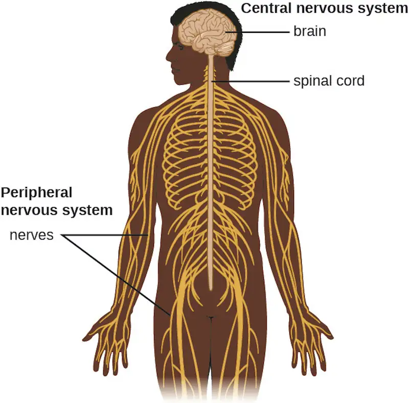
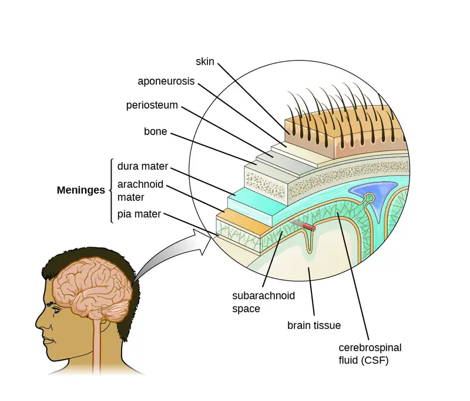
The Blood-Brain Barrier¶
The tissues of the CNS have extra protection in that they are not exposed to blood or the immune system in the same way as other tissues. The blood vessels that supply the brain with nutrients and other chemical substances lie on top of the pia mater. The capillaries associated with these blood vessels in the brain are less permeable than those in other locations in the body. The capillary endothelial cells form tight junctions that control the transfer of blood components to the brain. In addition, cranial capillaries have far fewer fenestra (pore-like structures that are sealed by a membrane) and pinocytotic vesicles than other capillaries. As a result, materials in the circulatory system have a very limited ability to interact with the CNS directly. This phenomenon is referred to as the blood-brain barrier.
The blood-brain barrier protects the cerebrospinal fluid from contamination, and can be quite effective at excluding potential microbial pathogens. As a consequence of these defenses, there is no normal microbiota in the cerebrospinal fluid. The blood-brain barrier also inhibits the movement of many drugs into the brain, particularly compounds that are not lipid soluble. This has profound ramifications for treatments involving infections of the CNS, because it is difficult for drugs to cross the blood-brain barrier to interact with pathogens that cause infections.
The spinal cord also has protective structures similar to those surrounding the brain. Within the bones of the vertebrae are meninges of dura mater (sometimes called the dural sheath), arachnoid mater, pia mater, and a blood-spinal cord barrier that controls the transfer of blood components from blood vessels associated with the spinal cord.
To cause an infection in the CNS, pathogens must successfully breach the blood-brain barrier or blood-spinal cord barrier. Various pathogens employ different virulence factors and mechanisms to achieve this, but they can generally be grouped into four categories: intercellular (also called paracellular), transcellular, leukocyte facilitated, and nonhematogenous. Intercellular entry involves the use of microbial virulence factors, toxins, or inflammation-mediated processes to pass between the cells of the blood-brain barrier. In transcellular entry, the pathogen passes through the cells of the blood-brain barrier using virulence factors that allow it to adhere to and trigger uptake by vacuole- or receptor-mediated mechanisms. Leukocyte-facilitated entry is a Trojan-horse mechanism that occurs when a pathogen infects peripheral blood leukocytes to directly enter the CNS. Nonhematogenous entry allows pathogens to enter the brain without encountering the blood-brain barrier; it occurs when pathogens travel along either the olfactory or trigeminal cranial nerves that lead directly into the CNS. For example, Naegleria fowleri, the "brain-eating amoeba," reaches the brain after entering the body through the nasal canal and attaching to the olfactory nerve.
Most medicines, such as antiretroviral therapies (ART) and anti-cancer drugs, cannot penetrate the blood-brain barrier to treat illness or eradicate pathogens. The brain thus becomes a reservoir for infections. For example, HIV eradicated elsewhere in the body can survive the brain, where it can lead to cognitive decline and also can reseed the infection more widely. Researchers such as Johns Hopkin's Dionna Williams studies the impact of these persistent infections as well as the mechanisms that enable the pathogens to cross the barrier. She has identified the specific proteins that allow HIV-infected monocytes to cross, and notes the role that dopamine plays in barrier permeability. Williams also researchers the mechanisms and impact of cocaine and opioids on the blood-brain barrier, which could lead to treatments for problematic substance use and potentially utilizing the drugs' barrier-migration mechanisms. Williams and her team have also developed an antibody capable of crossing the barrier to kill HIV-infected cells. The promise of this work goes far beyond HIV, because these methods could be applied to the wide array of diseases for which the blood-brain barrier inhibits treatment.
Link to Learning
View this video about the blood-brain barrier
Check Your Understanding
- What is the primary function of the blood-brain barrier?
The Peripheral Nervous System¶
The PNS is formed of the nerves that connect organs, limbs, and other anatomic structures of the body to the brain and spinal cord. Unlike the brain and spinal cord, the PNS is not protected by bone, meninges, or a blood barrier, and, as a consequence, the nerves of the PNS are much more susceptible to injury and infection. Microbial damage to peripheral nerves can lead to tingling or numbness known as neuropathy. These symptoms can also be produced by trauma and noninfectious causes such as drugs or chronic diseases like diabetes.
The Cells of the Nervous System¶
Tissues of the PNS and CNS are formed of cells called glial cells (neuroglial cells) and neurons (nerve cells). Glial cells assist in the organization of neurons, provide a scaffold for some aspects of neuronal function, and aid in recovery from neural injury.
Neurons are specialized cells found throughout the nervous system that transmit signals through the nervous system using electrochemical processes. The basic structure of a neuron is shown in Figure 26.4. The cell body (or soma) is the metabolic center of the neuron and contains the nucleus and most of the cell’s organelles. The many finely branched extensions from the soma are called dendrites. The soma also produces an elongated extension, called the axon, which is responsible for the transmission of electrochemical signals through elaborate ion transport processes. Axons of some types of neurons can extend up to one meter in length in the human body. To facilitate electrochemical signal transmission, some neurons have a myelin sheath surrounding the axon. Myelin, formed from the cell membranes of glial cells like the Schwann cells in the PNS and oligodendrocytes in the CNS, surrounds and insulates the axon, significantly increasing the speed of electrochemical signal transmission along the axon. The end of an axon forms numerous branches that end in bulbs called synaptic terminals. Neurons form junctions with other cells, such as another neuron, with which they exchange signals. The junctions, which are actually gaps between neurons, are referred to as synapses. At each synapse, there is a presynaptic neuron and a postsynaptic neuron (or other cell). The synaptic terminals of the axon of the presynaptic terminal form the synapse with the dendrites, soma, or sometimes the axon of the postsynaptic neuron, or a part of another type of cell such as a muscle cell. The synaptic terminals contain vesicles filled with chemicals called neurotransmitters. When the electrochemical signal moving down the axon reaches the synapse, the vesicles fuse with the membrane, and neurotransmitters are released, which diffuse across the synapse and bind to receptors on the membrane of the postsynaptic cell, potentially initiating a response in that cell. That response in the postsynaptic cell might include further propagation of an electrochemical signal to transmit information or contraction of a muscle fiber.
![a) A drawing of a neuron. The cell body contains the nucleus and has short projections called dendrite. The cell also has a long projection called an axon wrapped in a layer called the myelin sheath. The myelin sheath layer covers most of the axon but also produces uncovered spaces at set intervals; each space is called a node of Ranvier. The myelin sheath is made from oligodendrocytes. At the end of the axon is a synapse. B) Diagram of a synapse. This is the region where two neurons come together (but they do not touch). The presynaptic neuron releases neurotransmitters into the synapse space. The post synaptic neuron has receptors on which the neurotransmitters attach.](img/osc-microbio-26-01-neruron.webp)
Check Your Understanding
- What cells are associated with neurons, and what is their function?
- What is the structure and function of a synapse?
Meningitis and Encephalitis¶
Although the skull provides the brain with an excellent defense, it can also become problematic during infections. Any swelling of the brain or meninges that results from inflammation can cause intracranial pressure, leading to severe damage of the brain tissues, which have limited space to expand within the inflexible bones of the skull. The term meningitis is used to describe an inflammation of the meninges. Typical symptoms can include severe headache, fever, photophobia (increased sensitivity to light), stiff neck, convulsions, and confusion. An inflammation of brain tissue is called encephalitis, and patients exhibit signs and symptoms similar to those of meningitis in addition to lethargy, seizures, and personality changes. When inflammation affects both the meninges and the brain tissue, the condition is called meningoencephalitis. All three forms of inflammation are serious and can lead to blindness, deafness, coma, and death.
Meningitis and encephalitis can be caused by many different types of microbial pathogens. However, these conditions can also arise from noninfectious causes such as head trauma, some cancers, and certain drugs that trigger inflammation. To determine whether the inflammation is caused by a pathogen, a lumbar puncture is performed to obtain a sample of CSF. If the CSF contains increased levels of white blood cells and abnormal glucose and protein levels, this indicates that the inflammation is a response to an infectioninflinin.
Check Your Understanding
- What are the two types of inflammation that can impact the CNS?
- Why do both forms of inflammation have such serious consequences?
Micro Connections: Guillain-Barré Syndrome
Guillain-Barré syndrome (GBS) is a rare condition that can be preceded by a viral or bacterial infection that results in an autoimmune reaction against myelinated nerve cells. The destruction of the myelin sheath around these neurons results in a loss of sensation and function. The first symptoms of this condition are tingling and weakness in the affected tissues. The symptoms intensify over a period of several weeks and can culminate in complete paralysis. Severe cases can be life-threatening. Infections by several different microbial pathogens, including Campylobacter jejuni (the most common risk factor), cytomegalovirus, Epstein-Barr virus, varicella-zoster virus, Mycoplasma pneumoniae,1 and Zika virus2 have been identified as triggers for GBS. Anti-myelin antibodies from patients with GBS have been demonstrated to also recognize C. jejuni. It is possible that cross-reactive antibodies, antibodies that react with similar antigenic sites on different proteins, might be formed during an infection and may lead to this autoimmune response.
GBS is solely identified by the appearance of clinical symptoms. There are no other diagnostic tests available. Fortunately, most cases spontaneously resolve within a few months with few permanent effects, as there is no available vaccine. GBS can be treated by plasmapheresis. In this procedure, the patient’s plasma is filtered from their blood, removing autoantibodies.
26.2 Bacterial Diseases of the Nervous System¶
Learning Objectives
By the end of this section, you will be able to:
- Identify the most common bacteria that can cause infections of the nervous system
- Compare the major characteristics of specific bacterial diseases affecting the nervous system
Bacterial infections that affect the nervous system are serious and can be life-threatening. Fortunately, there are only a few bacterial species commonly associated with neurological infections.
Bacterial Meningitis¶
Bacterial meningitis is one of the most serious forms of meningitis. Bacteria that cause meningitis often gain access to the CNS through the bloodstream after trauma or as a result of the action of bacterial toxins. Bacteria may also spread from structures in the upper respiratory tract, such as the oropharynx, nasopharynx, sinuses, and middle ear. Patients with head wounds or cochlear implants (an electronic device placed in the inner ear) are also at risk for developing meningitis.
Many of the bacteria that can cause meningitis are commonly found in healthy people. The most common causes of non-neonatal bacterial meningitis are Neisseria meningitidis, Streptococcus pneumoniae, and Haemophilus influenzae. All three of these bacterial pathogens are spread from person to person by respiratory secretions. Each can colonize and cross through the mucous membranes of the oropharynx and nasopharynx, and enter the blood. Once in the blood, these pathogens can disseminate throughout the body and are capable of both establishing an infection and triggering inflammation in any body site, including the meninges (Figure 26.5). Without appropriate systemic antibacterial therapy, the case-fatality rate can be as high as 70%, and 20% of those survivors may be left with irreversible nerve damage or tissue destruction, resulting in hearing loss, neurologic disability, or loss of a limb. Mortality rates are much lower (as low as 15%) in populations where appropriate therapeutic drugs and preventive vaccines are available.3
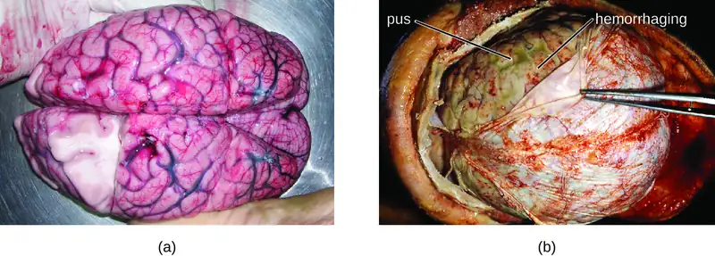
A variety of other bacteria, including Listeria monocytogenes and Escherichia coli, are also capable of causing meningitis. These bacteria cause infections of the arachnoid mater and CSF after spreading through the circulation in blood or by spreading from an infection of the sinuses or nasopharynx. Streptococcus agalactiae, commonly found in the microbiota of the vagina and gastrointestinal tract, can also cause bacterial meningitis in newborns after transmission either before or during birth.
The profound inflammation caused by these microbes can result in early symptoms that include severe headache, fever, confusion, nausea, vomiting, photophobia, and stiff neck. Systemic inflammatory responses associated with some types of bacterial meningitis can lead to hemorrhaging and purpuric lesions on skin, followed by even more severe conditions that include shock, convulsions, coma, and death—in some cases, in the span of just a few hours.
Diagnosis of bacterial meningitis is best confirmed by analysis of CSF obtained by a lumbar puncture. Abnormal levels of polymorphonuclear neutrophils (PMNs) (> 10 PMNs/mm3), glucose (< 45 mg/dL), and protein (> 45 mg/dL) in the CSF are suggestive of bacterial meningitis.4 Characteristics of specific forms of bacterial meningitis are detailed in the subsections that follow.
Meningococcal Meningitis¶
Meningococcal meningitis is a serious infection caused by the gram-negative coccus N. meningitidis. In some cases, death can occur within a few hours of the onset of symptoms. Nonfatal cases can result in irreversible nerve damage, resulting in hearing loss and brain damage, or amputation of extremities because of tissue necrosis.
Meningococcal meningitis can infect people of any age, but its prevalence is highest among infants, adolescents, and young adults.5 Meningococcal meningitis was once the most common cause of meningitis epidemics in human populations. This is still the case in a swath of sub-Saharan Africa known as the meningitis belt, but meningococcal meningitis epidemics have become rare in most other regions, thanks to meningococcal vaccines. However, outbreaks can still occur in communities, schools, colleges, prisons, and other populations where people are in close direct contact.
N. meningitidis has a high affinity for mucosal membranes in the oropharynx and nasopharynx. Contact with respiratory secretions containing N. meningitidis is an effective mode of transmission. The pathogenicity of N. meningitidis is enhanced by virulence factors that contribute to the rapid progression of the disease. These include lipooligosaccharide (LOS) endotoxin, type IV pili for attachment to host tissues, and polysaccharide capsules that help the cells avoid phagocytosis and complement-mediated killing. Additional virulence factors include IgA protease (which breaks down IgA antibodies), the invasion factors Opa, Opc, and porin (which facilitate transcellular entry through the blood-brain barrier), iron-uptake factors (which strip heme units from hemoglobin in host cells and use them for growth), and stress proteins that protect bacteria from reactive oxygen molecules.
A unique sign of meningococcal meningitis is the formation of a petechial rash on the skin or mucous membranes, characterized by tiny, red, flat, hemorrhagic lesions. This rash, which appears soon after disease onset, is a response to LOS endotoxin and adherence virulence factors that disrupt the endothelial cells of capillaries and small veins in the skin. The blood vessel disruption triggers the formation of tiny blood clots, causing blood to leak into the surrounding tissue. As the infection progresses, the levels of virulence factors increase, and the hemorrhagic lesions can increase in size as blood continues to leak into tissues. Lesions larger than 1.0 cm usually occur in patients developing shock, as virulence factors cause increased hemorrhage and clot formation. Sepsis, as a result of systemic damage from meningococcal virulence factors, can lead to rapid multiple organ failure, shock, disseminated intravascular coagulation, and death.
Because meningococcoal meningitis progresses so rapidly, a greater variety of clinical specimens are required for the timely detection of N. meningitidis. Required specimens can include blood, CSF, naso- and oropharyngeal swabs, urethral and endocervical swabs, petechial aspirates, and biopsies. Safety protocols for handling and transport of specimens suspected of containing N. meningitidis should always be followed, since cases of fatal meningococcal disease have occurred in healthcare workers exposed to droplets or aerosols from patient specimens. Prompt presumptive diagnosis of meningococcal meningitis can occur when CSF is directly evaluated by Gram stain, revealing extra- and intracellular gram-negative diplococci with a distinctive coffee-bean microscopic morphology associated with PMNs (Figure 26.6). Identification can also be made directly from CSF using latex agglutination and immunochromatographic rapid diagnostic tests specific for N. meningitidis. Species identification can also be performed using DNA sequence-based typing schemes for hypervariable outer membrane proteins of N. meningitidis, which has replaced sero(sub)typing.
Meningococcal infections can be treated with antibiotic therapy, and third-generation cephalosporins are most often employed. However, because outcomes can be negative even with treatment, preventive vaccination is the best form of treatment. In 2010, countries in Africa’s meningitis belt began using a new serogroup A meningococcal conjugate vaccine. This program has dramatically reduced the number of cases of meningococcal meningitis by conferring individual and herd immunity.
Twelve different capsular serotypes of N. meningitidis are known to exist. Serotypes A, B, C, W, X, and Y are the most prevalent worldwide. The CDC recommends that children between 11–12 years of age be vaccinated with a single dose of a quadrivalent vaccine that protects against serotypes A, C, W, and Y, with a booster at age 16.6 An additional booster or injections of serogroup B meningococcal vaccine may be given to individuals in high-risk settings (such as epidemic outbreaks on college campuses).
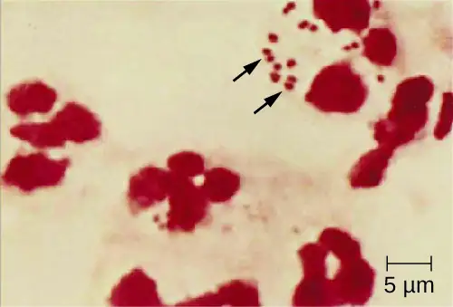
Micro Connections: Meningitis on Campus
College students living in dorms or communal housing are at increased risk for contracting epidemic meningitis. From 2011 to 2015, there have been at least nine meningococcal outbreaks on college campuses in the United States. These incidents involved a total of 43 students (of whom four died).7 In spite of rapid diagnosis and aggressive antimicrobial treatment, several of the survivors suffered from amputations or serious neurological problems.
Prophylactic vaccination of first-year college students living in dorms is recommended by the CDC, and insurance companies now cover meningococcal vaccination for students in college dorms. Some colleges have mandated vaccination with meningococcal conjugate vaccine for certain students entering college (Figure 26.7).
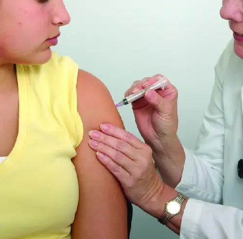
Pneumococcal Meningitis¶
Pneumococcal meningitis is caused by the encapsulated gram-positive bacterium S. pneumoniae (pneumococcus, also called strep pneumo). This organism is commonly found in the microbiota of the pharynx of 30–70% of young children, depending on the sampling method, while S. pneumoniae can be found in fewer than 5% of healthy adults. Although it is often present without disease symptoms, this microbe can cross the blood-brain barrier in susceptible individuals. In some cases, it may also result in septicemia. Since the introduction of the Hib vaccine, S. pneumoniae has become the leading cause of meningitis in humans aged 2 months through adulthood.
S. pneumoniae can be identified in CSF samples using gram-stained specimens, latex agglutination, and immunochromatographic RDT specific for S. pneumoniae. In gram-stained samples, S. pneumoniae appears as gram-positive, lancet-shaped diplococci (Figure 26.8). Identification of S. pneumoniae can also be achieved using cultures of CSF and blood, and at least 93 distinct serotypes can be identified based on the quellung reaction to unique capsular polysaccharides. PCR and RT-PCR assays are also available to confirm identification.
Major virulence factors produced by S. pneumoniae include PI-1 pilin for adherence to host cells (pneumococcal adherence) and virulence factor B (PavB) for attachment to cells of the respiratory tract; choline-binding proteins (cbpA) that bind to epithelial cells and interfere with immune factors IgA and C3; and the cytoplasmic bacterial toxin pneumolysin that triggers an inflammatory response.
With the emergence of drug-resistant strains of S. pneumoniae, pneumococcal meningitis is typically treated with broad-spectrum antibiotics, such as levofloxacin, cefotaxime, penicillin, or other β-lactam antibiotics. The two available pneumococcal vaccines are described in Bacterial Infections of the Respiratory Tract.
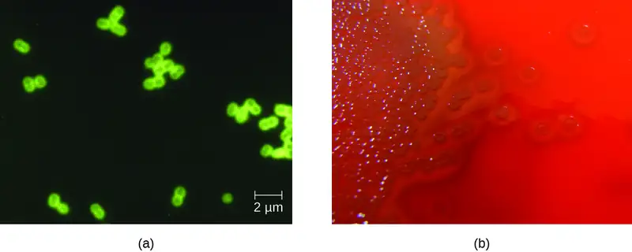
Haemophilus influenzae Type b¶
Meningitis due to H. influenzae serotype b (Hib), an encapsulated pleomorphic gram-negative coccobacilli, is now uncommon in most countries, because of the use of the effective Hib vaccine. Without the use of the Hib vaccine, H. influenzae can be the primary cause of meningitis in children 2 months thru 5 years of age. H. influenzae can be found in the throats of healthy individuals, including infants and young children. By five years of age, most children have developed immunity to this microbe. Infants older than 2 months of age, however, do not produce a sufficient protective antibody response and are susceptible to serious disease. The intracranial pressure caused by this infection leads to a 5% mortality rate and 20% incidence of deafness or brain damage in survivors.8
H. influenzae produces at least 16 different virulence factors, including LOS, which triggers inflammation, and Haemophilus adhesion and penetration factor (Hap), which aids in attachment and invasion into respiratory epithelial cells. The bacterium also has a polysaccharide capsule that helps it avoid phagocytosis, as well as factors such as IgA1 protease and P2 protein that allow it to evade antibodies secreted from mucous membranes. In addition, factors such as hemoglobin-binding protein (Hgp) and transferrin-binding protein (Tbp) acquire iron from hemoglobin and transferrin, respectively, for bacterial growth.
Preliminary diagnosis of H. influenzae infections can be made by direct PCR and a smear of CSF. Stained smears will reveal intracellular and extracellular PMNs with small, pleomorphic, gram-negative coccobacilli or filamentous forms that are characteristic of H. influenzae. Initial confirmation of this genus can be based on its fastidious growth on chocolate agar. Identification is confirmed with requirements for exogenous biochemical growth cofactors NAD and heme (by MALDI-TOF), latex agglutination, and RT-PCR.
Meningitis caused by H. influenzae is usually treated with doxycycline, fluoroquinolones, second- and third-generation cephalosporins, and carbapenems. The best means of preventing H. influenza infection is with the use of the Hib polysaccharide conjugate vaccine. It is recommended that all children receive this vaccine at 2, 4, and 6 months of age, with a final booster dose at 12 to 15 months of age.9
Neonatal Meningitis¶
S. agalactiae, Group B streptococcus (GBS), is an encapsulated gram-positive bacterium that is the most common cause of neonatal meningitis, a term that refers to meningitis occurring in babies up to 3 months of age.10 S. agalactiae can also cause meningitis in people of all ages and can be found in the urogenital and gastrointestinal microbiota of about 10–30% of humans.
Neonatal infection occurs as either early onset or late-onset disease. Early onset disease is defined as occurring in infants up to 7 days old. The infant initially becomes infected by S. agalactiae during childbirth, when the bacteria may be transferred from the vagina during birth. Incidence of early onset neonatal meningitis can be greatly reduced by giving intravenous antibiotics to a person giving birth.
Late-onset neonatal meningitis occurs in infants between 1 week and 3 months of age. Infants born to people with S. agalactiae in the urogenital tract have a higher risk of late-onset menigitis, but late-onset infections can be transmitted from several sources; often, the source of infection is unknown. Infants who are born prematurely (before 37 weeks of pregnancy) or to people who develop a fever also have a greater risk of contracting late-onset neonatal meningitis.
Signs and symptoms of early onset disease include temperature instability, apnea (cessation of breathing), bradycardia (slow heart rate), hypotension, difficulty feeding, irritability, and limpness. When asleep, the baby may be difficult to wake up. Symptoms of late-onset disease are more likely to include seizures, bulging fontanel (soft spot), stiff neck, hemiparesis (weakness on one side of the body), and opisthotonos (rigid body with arched back and head thrown backward).
S. agalactiae produces at least 12 virulence factors that include FbsA that attaches to host cell surface proteins, PI-1 pili that promotes the invasion of human endothelial cells, a polysaccharide capsule that prevents the activation of the alternative complement pathway and inhibits phagocytosis, and the toxin CAMP factor, which forms pores in host cell membranes and binds to IgG and IgM antibodies.
Diagnosis of neonatal meningitis is often, but not uniformly, confirmed by positive results from cultures of CSF or blood. Tests include routine culture, antigen detection by enzyme immunoassay, serotyping of different capsule types, PCR, and RT-PCR. It is typically treated with β-lactam antibiotics such as intravenous penicillin or ampicillin plus gentamicin. Even with treatment, roughly 10% mortality is seen in infected neonates.11
Check Your Understanding
- Which groups are most vulnerable to each of the bacterial meningitis diseases?
- For which of the bacterial meningitis diseases are there vaccines presently available?
- Which organism can cause epidemic meningitis?
Clostridium-Associated Diseases¶
Species in the genus Clostridium are gram-positive, endospore-forming rods that are obligate anaerobes. Endospores of Clostridium spp. are widespread in nature, commonly found in soil, water, feces, sewage, and marine sediments. Clostridium spp. produce more types of protein exotoxins than any other bacterial genus, including two exotoxins with protease activity that are the most potent known biological toxins: botulinum neurotoxin (BoNT) and tetanus neurotoxin (TeNT). These two toxins have lethal doses of 0.2–10 ng per kg body weight.
BoNT can be produced by unique strains of C. butyricum, and C. baratii; however, it is primarily associated with C. botulinum and the condition of botulism. TeNT, which causes tetanus, is only produced by C. tetani. These powerful neural exotoxins are the primary virulence factors for these pathogens. The mode of action for these toxins was described in Virulence Factors of Bacterial and Viral Pathogens and illustrated in Figure 15.16.
Diagnosis of tetanus or botulism typically involves bioassays that detect the presence of BoNT and TeNT in fecal specimens, blood (serum), or suspect foods. In addition, both C. botulinum and C. tetani can be isolated and cultured using commercially available media for anaerobes. ELISA and RT-PCR tests are also available.
Tetanus¶
Tetanus is a noncommunicable disease characterized by uncontrollable muscle spasms (contractions) caused by the action of TeNT. It generally occurs when C. tetani infects a wound and produces TeNT, which rapidly binds to neural tissue, resulting in an intoxication (poisoning) of neurons. Depending on the site and extent of infection, cases of tetanus can be described as localized, cephalic, or generalized. Generalized tetanus that occurs in a newborn is called neonatal tetanus.
Localized tetanus occurs when TeNT only affects the muscle groups close to the injury site. There is no CNS involvement, and the symptoms are usually mild, with localized muscle spasms caused by a dysfunction in the surrounding neurons. Individuals with partial immunity—especially previously vaccinated individuals who neglect to get the recommended booster shots—are most likely to develop localized tetanus as a result of C. tetani infecting a puncture wound.
Cephalic tetanus is a rare, localized form of tetanus generally associated with wounds on the head or face. In rare cases, it has occurred in cases of otitis media (middle ear infection). Cephalic tetanus often results in patients seeing double images, because of the spasms affecting the muscles that control eye movement.
Both localized and cephalic tetanus may progress to generalized tetanus—a much more serious condition—if TeNT is able to spread further into body tissues. In generalized tetanus, TeNT enters neurons of the PNS. From there, TeNT travels from the site of the wound, usually on an extremity of the body, retrograde (back up) to inhibitory neurons in the CNS. There, it prevents the release of gamma aminobutyric acid (GABA), the neurotransmitter responsible for muscle relaxation. The resulting muscle spasms often first occur in the jaw muscles, leading to the characteristic symptom of lockjaw (inability to open the mouth). As the toxin progressively continues to block neurotransmitter release, other muscles become involved, resulting in uncontrollable, sudden muscle spasms that are powerful enough to cause tendons to rupture and bones to fracture. Spasms in the muscles in the neck, back, and legs may cause the body to form a rigid, stiff arch, a posture called opisthotonos (Figure 26.9). Spasms in the larynx, diaphragm, and muscles of the chest restrict the patient’s ability to swallow and breathe, eventually leading to death by asphyxiation (insufficient supply of oxygen).
Neonatal tetanus typically occurs when the stump of the umbilical cord is contaminated with spores of C. tetani after delivery. Although this condition is rare in the United States, neonatal tetanus is a major cause of infant mortality in countries that lack maternal immunization for tetanus and where birth often occurs in unsanitary conditions. At the end of the first week of life, infected infants become irritable, feed poorly, and develop rigidity with spasms. Neonatal tetanus has a very poor prognosis with a mortality rate of 70%–100%.12
Treatment for patients with tetanus includes assisted breathing through the use of a ventilator, wound debridement, fluid balance, and antibiotic therapy with metronidazole or penicillin to halt the growth of C. tetani. In addition, patients are treated with TeNT antitoxin, preferably in the form of human immunoglobulin to neutralize nonfixed toxin and benzodiazepines to enhance the effect of GABA for muscle relaxation and anxiety.
A tetanus toxoid (TT) vaccine is available for protection and prevention of tetanus. It is the T component of vaccines such as DTaP, Tdap, and Td. The CDC recommends children receive doses of the DTaP vaccine at 2, 4, 6, and 15–18 months of age and another at 4–6 years of age. One dose of Td is recommended for adolescents and adults as a TT booster every 10 years.13
Botulism¶
Botulism is a rare but frequently fatal illness caused by intoxication by BoNT. It can occur either as the result of an infection by C. botulinum, in which case the bacteria produce BoNT in vivo, or as the result of a direct introduction of BoNT into tissues.
Infection and production of BoNT in vivo can result in wound botulism, infant botulism, and adult intestinal toxemia. Wound botulism typically occurs when C. botulinum is introduced directly into a wound after a traumatic injury, deep puncture wound, or injection site. Infant botulism, which occurs in infants younger than 1 year of age, and adult intestinal toxemia, which occurs in immunocompromised adults, results from ingesting C. botulinum endospores in food. The endospores germinate in the body, resulting in the production of BoNT in the intestinal tract.
Intoxications occur when BoNT is produced outside the body and then introduced directly into the body through food (foodborne botulism), air (inhalation botulism), or a clinical procedure (iatrogenic botulism). Foodborne botulism, the most common of these forms, occurs when BoNT is produced in contaminated food and then ingested along with the food (recall Case in Point: A Streak of Bad Potluck). Inhalation botulism is rare because BoNT is unstable as an aerosol and does not occur in nature; however, it can be produced in the laboratory and was used (unsuccessfully) as a bioweapon by terrorists in Japan in the 1990s. A few cases of accidental inhalation botulism have also occurred. Iatrogenic botulism is also rare; it is associated with injections of BoNT used for cosmetic purposes (see Micro Connections: Medicinal Uses of Botulinum Toxin).
When BoNT enters the bloodstream in the gastrointestinal tract, wound, or lungs, it is transferred to the neuromuscular junctions of motor neurons where it binds irreversibly to presynaptic membranes and prevents the release of acetylcholine from the presynaptic terminal of motor neurons into the neuromuscular junction. The consequence of preventing acetylcholine release is the loss of muscle activity, leading to muscle relaxation and eventually paralysis.
If BoNT is absorbed through the gastrointestinal tract, early symptoms of botulism include blurred vision, drooping eyelids, difficulty swallowing, abdominal cramps, nausea, vomiting, constipation, or possibly diarrhea. This is followed by progressive flaccid paralysis, a gradual weakening and loss of control over the muscles. A patient’s experience can be particularly terrifying, because hearing remains normal, consciousness is not lost, and they are fully aware of the progression of their condition. In infants, notable signs of botulism include weak cry, decreased ability to suckle, and hypotonia (limpness of head or body). Eventually, botulism ends in death from respiratory failure caused by the progressive paralysis of the muscles of the upper airway, diaphragm, and chest.
Botulism is treated with an antitoxin specific for BoNT. If administered in time, the antitoxin stops the progression of paralysis but does not reverse it. Once the antitoxin has been administered, the patient will slowly regain neurological function, but this may take several weeks or months, depending on the severity of the case. During recovery, patients generally must remain hospitalized and receive breathing assistance through a ventilator.
Check Your Understanding
- How frequently should the tetanus vaccination be updated in adults?
- What are the most common causes of botulism?
- Why is botulism not treated with an antibiotic?
Micro Connections: Medicinal Uses of Botulinum Toxin
Although it is the most toxic biological material known to man, botulinum toxin is often intentionally injected into people to treat other conditions. Type A botulinum toxin is used cosmetically to reduce wrinkles. The injection of minute quantities of this toxin into the face causes the relaxation of facial muscles, thereby giving the skin a smoother appearance. Eyelid twitching and crossed eyes can also be treated with botulinum toxin injections. Other uses of this toxin include the treatment of hyperhidrosis (excessive sweating). In fact, botulinum toxin can be used to moderate the effects of several other apparently nonmicrobial diseases involving inappropriate nerve function. Such diseases include cerebral palsy, multiple sclerosis, and Parkinson’s disease. Each of these diseases is characterized by a loss of control over muscle contractions; treatment with botulinum toxin serves to relax contracted muscles.
Listeriosis¶
Listeria monocytogenes is a nonencapsulated, nonsporulating, gram-positive rod and a foodborne pathogen that causes listeriosis. At-risk groups include pregnant people, neonates, the elderly, and the immunocompromised (recall the Clinical Focus case studies in Microbial Growth and Microbial Mechanisms of Pathogenicity). Listeriosis leads to meningitis in about 20% of cases, particularly neonates and patients over the age of 60. The CDC identifies listeriosis as the third leading cause of death due to foodborne illness, with overall mortality rates reaching 16%.14 Listeriosis can cause also cause spontaneous abortion in pregnant people because of the pathogen’s unique ability to cross the placenta.
L. monocytogenes is generally introduced into food items by contamination with soil or animal manure used as fertilizer. Foods commonly associated with listeriosis include fresh fruits and vegetables, frozen vegetables, processed meats, soft cheeses, and raw milk.15 Unlike most other foodborne pathogens, Listeria is able to grow at temperatures between 0 °C and 50 °C, and can therefore continue to grow, even in refrigerated foods.
Ingestion of contaminated food leads initially to infection of the gastrointestinal tract. However, L. monocytogenes produces several unique virulence factors that allow it to cross the intestinal barrier and spread to other body systems. Surface proteins called internalins (InlA and InlB) help L. monocytogenes invade nonphagocytic cells and tissues, penetrating the intestinal wall and becoming disseminating through the circulatory and lymphatic systems. Internalins also enable L. monocytogenes to breach other important barriers, including the blood-brain barrier and the placenta. Within tissues, L. monocytogenes uses other proteins called listeriolysin O and ActA to facilitate intercellular movement, allowing the infection to spread from cell to cell (Figure 26.10).
L. monocytogenes is usually identified by cultivation of samples from a normally sterile site (e.g., blood or CSF). Recovery of viable organisms can be enhanced using cold enrichment by incubating samples in a broth at 4 °C for a week or more. Distinguishing types and subtypes of L. monocytogenes—an important step for diagnosis and epidemiology—is typically done using pulsed-field gel electrophoresis. Identification can also be achieved using chemiluminescence DNA probe assays and MALDI-TOF.
Treatment for listeriosis involves antibiotic therapy, most commonly with ampicillin and gentamicin. There is no vaccine available.
![a) Micrograph of a rod shaped cell. b) Diagram of infection. Step 1: Listeria monocytogenes enters cell via phagocytosis. Diagram shows rod shaped cell (Listeria monocytogens) in a phagosome. 2: Pathogen escapes when phagosome is lysed. 3: Pathogen reproduces. 4: Pahtogen produces actin filaments from host cytoskeleton components. The diagram shows tails on the cell labeled actin filaments. 5: Actin pushes the pathogen from one cell to another through a protrusion of the host membrane. 6: The protrusion is engulfed by another cell. This forms a vesicle with the pathogen inside. 7: cycle repeats.](img/osc-microbio-26-02-listeria.webp)
Check Your Understanding
- How does Listeria enter the nervous system?
Hansen’s Disease (Leprosy)¶
Hansen’s disease (also known as leprosy) is caused by a long, thin, filamentous rod-shaped bacterium Mycobacterium leprae, an obligate intracellular pathogen. M. leprae is classified as gram-positive bacteria, but it is best visualized microscopically with an acid-fast stain and is generally referred to as an acid-fast bacterium. Hansen’s disease affects the PNS, leading to permanent damage and loss of appendages or other body parts.
Hansen’s disease is communicable but not highly contagious; approximately 95% of the human population cannot be easily infected because they have a natural immunity to M. leprae. Person-to-person transmission occurs by inhalation into nasal mucosa or prolonged and repeated contact with infected skin. Armadillos, one of only five mammals susceptible to Hansen’s disease, have also been implicated in transmission of some cases.16
In the human body, M. leprae grows best at the cooler temperatures found in peripheral tissues like the nose, toes, fingers, and ears. Some of the virulence factors that contribute to M. leprae’s pathogenicity are located on the capsule and cell wall of the bacterium. These virulence factors enable it to bind to and invade Schwann cells, resulting in progressive demyelination that gradually destroys neurons of the PNS. The loss of neuronal function leads to hypoesthesia (numbness) in infected lesions. M. leprae is readily phagocytized by macrophages but is able to survive within macrophages in part by neutralizing reactive oxygen species produced in the oxidative burst of the phagolysosome. Like L. monocytogenes, M. leprae also can move directly between macrophages to avoid clearance by immune factors.
The extent of the disease is related to the immune response of the patient. Initial symptoms may not appear for as long as 2 to 5 years after infection. These often begin with small, blanched, numb areas of the skin. In most individuals, these will resolve spontaneously, but some cases may progress to a more serious form of the disease. Tuberculoid (paucibacillary) Hansen’s disease is marked by the presence of relatively few (three or less) flat, blanched skin lesions with small nodules at the edges and few bacteria present in the lesion. Although these lesions can persist for years or decades, the bacteria are held in check by an effective immune response including cell-mediated cytotoxicity. Individuals who are unable to contain the infection may later develop lepromatous (multibacillary) Hansen’s disease. This is a progressive form of the disease characterized by nodules filled with acid-fast bacilli and macrophages. Impaired function of infected Schwann cells leads to peripheral nerve damage, resulting in sensory loss that leads to ulcers, deformities, and fractures. Damage to the ulnar nerve (in the wrist) by M. leprae is one of the most common causes of crippling of the hand. In some cases, chronic tissue damage can ultimately lead to loss of fingers or toes. When mucosal tissues are also involved, disfiguring lesions of the nose and face can also occur (Figure 26.11).
Hansen’s disease is diagnosed on the basis of clinical signs and symptoms of the disease, and confirmed by the presence of acid-fast bacilli on skin smears or in skin biopsy specimens (Figure 26.11). M. leprae does not grow in vitro on any known laboratory media, but it can be identified by culturing in vivo in the footpads of laboratory mice or armadillos. Where needed, PCR and genotyping of M. leprae DNA in infected human tissue may be performed for diagnosis and epidemiology. Chemist Alice Ball, at the relatively young age of 23, developed the first effective method for treating Hansen's disease. Oil from the chaulmoogra tree had been shown to impact the disease, but the substance was extremely thick and viscous, rendering it unusable as an injectable treatment. Ball recognized that the oil's ester compounds were critical to counteracting the bacteria, so she created a method to isolate the esters using alcohol, and after further manipulation created a water soluble version. Ball unfortunately passed away a year later, and the university president fraudulently published her work as his own; however, a local surgeon who had collaborated with Ball repudiated those claims. The "Ball Method" was used to create the first widely effective treatments, and the chaulmoogra-based medicine was the primary global treatment for leprosy until sulfone therapies were developed in the 1940s.
Hansen’s disease responds well to treatment and, if diagnosed and treated early, does not cause disability. In the United States, most patients with Hansen’s disease are treated in ambulatory care clinics in major cities by the National Hansen’s Disease program, the only institution in the United States exclusively devoted to Hansen’s disease. Since 1995, WHO has made multidrug therapy for Hansen’s disease available free of charge to all patients worldwide. As a result, global prevalence of Hansen’s disease has declined from about 5.2 million cases in 1985 to roughly 176,000 in 2014.17 Multidrug therapy consists of dapsone and rifampicin for all patients and a third drug, clofazimin, for patients with multibacillary disease.
Currently, there is no universally accepted vaccine for Hansen’s disease. India and Brazil use a tuberculosis vaccine against Hansen’s disease because both diseases are caused by species of Mycobacterium. The effectiveness of this method is questionable, however, since it appears that the vaccine works in some populations but not in others.
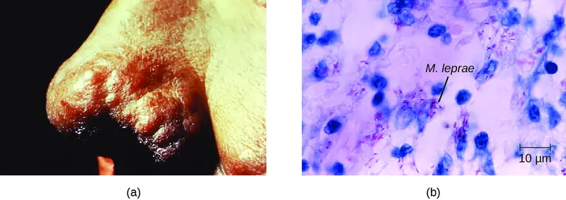
Check Your Understanding
- What prevents the progression from tuberculoid to lepromatus leprosy?
- Why does Hansen’s disease typically affect the nerves of the extremities?
Eye on Ethics: Leper Colonies
Disfiguring, deadly diseases like leprosy have historically been stigmatized in many cultures. Before leprosy was understood, victims were often isolated in leper colonies, a practice mentioned frequently in ancient texts, including the Bible. But leper colonies are not just an artifact of the ancient world. In Hawaii, a leper colony established in the late nineteenth century persisted until the mid-twentieth century, its residents forced to live in deplorable conditions.18 Although leprosy is a communicable disease, it is not considered contagious (easily communicable), and it certainly does not pose enough of a threat to justify the permanent isolation of its victims. Today, we reserve the practices of isolation and quarantine to patients with more dangerous diseases, such as Ebola or multiple-drug-resistant bacteria like Mycobacterium tuberculosis and Staphylococcus aureus. The ethical argument for this practice is that isolating infected patients is necessary to prevent the transmission and spread of highly contagious diseases—even when it goes against the wishes of the patient.
Of course, it is much easier to justify the practice of temporary, clinical quarantining than permanent social segregation, as occurred in leper colonies. In the 1980s, there were calls by some groups to establish camps for people infected with AIDS. Although this idea was never actually implemented, it begs the question—where do we draw the line? Are permanent isolation camps or colonies ever medically or socially justifiable? Suppose there were an outbreak of a fatal, contagious disease for which there is no treatment. Would it be justifiable to impose social isolation on those afflicted with the disease? How would we balance the rights of the infected with the risk they pose to others? To what extent should society expect individuals to put their own health at risk for the sake of treating others humanely?
Disease Profile: Bacterial Infections of the Nervous System
Despite the formidable defenses protecting the nervous system, a number of bacterial pathogens are known to cause serious infections of the CNS or PNS. Unfortunately, these infections are often serious and life threatening. Figure 26.12 summarizes some important infections of the nervous system.
![Table titled: Bacterial Infections of the Nervous System. Columns: Disease; Pathogen; Signs and Symptoms; Transmission; Antimicrobial Drugs; Vaccine. Disease: Botulism; Clostridium botulinum; Blurred vision, drooping eyelids, difficulty swallowing and breathing, nausea, vomiting,often fatal; Ingestion of preformed toxin in food, ingestion of endospores in food by infants or immunocompromised adults, bacterium introduced via wound or injection; Antitoxin; penicillin (for wound botulism)l; None. Disease: Hansen’s disease (leprosy); Mycobacterium leprae; Hypopigmented skin, skin lesions, and nodules, loss of peripheral nerve function, loss of fingers, toes, and extremities; Inhalation, possible transmissible from armadillos to humans; Dapsone, rifampin, clofazimin; None. Haemophilus influenzae type b meningitis; Haemophilus influenza; Nausea, vomiting, photophobia, stiff neck, confusion; Direct contact, inhalation of aerosols; Doxycycline, fluoroquinolones, second- and third-generation cephalosporins, and . carbapenems; Hib vaccine. Disease: Listeriosis; Listeria monocytogenes; Initial flu-like symptoms, sepsis and potentially fatal meningitis in susceptible individuals, miscarriage in pregnant people; Bacterium ingested with contaminated food or water; Ampicillin, gentamicin; None . Disease: Meningococcal meningitis; Neisseria meningitidis; Nausea, vomiting, photophobia, stiff neck, confusion; often fatal; Direct contact; Cephalosporins or penicillins; Meningococcal conjugate. Disease: Neonatal meningitis; Streptococcus agalactiae; Temperature instability, apnea, bradycardia, hypotension, feeding difficulty, irritability, limpness, seizures, bulging fontanel, stiff neck, opisthotonos, hemiparesis, often fatal; Direct contact in birth canal; Ampicillin plus gentamicin, cefotaxime, or both; None. Pneumococcal meningitis; Streptococcus pneumoniae; Nausea, vomiting, photophobia, stiff neck, confusion, often fatal; Direct contact, aerosols; Cephalosporins, penicillin; Pneumococcal vaccines. Disease: Tetanus; Clostridium tetani; Progressive spasmatic paralysis starting with the jaw, often fatal; Bacterium introduced in puncture wound; Penicillin, antitoxin; DTaP, Tdap.](img/osc-microbio-26-02-bacttbl.webp)
26.3 Acellular Diseases of the Nervous System¶
Learning Objectives
By the end of this section, you will be able to:
- Identify the most common acellular pathogens that can cause infections of the nervous system
- Compare the major characteristics of specific viral diseases affecting the nervous system
A number of different viruses and subviral particles can cause diseases that affect the nervous system. Viral diseases tend to be more common than bacterial infections of the nervous system today. Fortunately, viral infections are generally milder than their bacterial counterparts and often spontaneously resolve. Some of the more important acellular pathogens of the nervous system are described in this section.
Viral Meningitis¶
Although it is much more common than bacterial meningitis, viral meningitis is typically less severe. Many different viruses can lead to meningitis as a sequela of the primary infection, including those that cause herpes, influenza, measles, and mumps. Most cases of viral meningitis spontaneously resolve, but severe cases do occur.
Arboviral Encephalitis¶
Several types of insect-borne viruses can cause encephalitis. Collectively, these viruses are referred to as arboviruses (because they are arthropod-borne), and the diseases they cause are described as arboviral encephalitis. Most arboviruses are endemic to specific geographical regions. Arborviral encephalitis diseases found in the United States include eastern equine encephalitis (EEE), western equine encephalitis (WEE), St. Louis encephalitis, and West Nile encephalitis (WNE). Expansion of arboviruses beyond their endemic regions sometimes occurs, generally as a result of environmental changes that are favorable to the virus or its vector. Increased travel of infected humans, animals, or vectors has also allowed arboviruses to spread into new regions.
In most cases, arboviral infections are asymptomatic or lead to a mild disease. However, when symptoms do occur, they include high fever, chills, headaches, vomiting, diarrhea, and restlessness. In elderly patients, severe arboviral encephalitis can rapidly lead to convulsions, coma, and death.
Mosquitoes are the most common biological vectors for arboviruses, which tend to be enveloped ssRNA viruses. Thus, prevention of arboviral infections is best achieved by avoiding mosquitoes—using insect repellent, wearing long pants and sleeves, sleeping in well-screened rooms, using bed nets, etc.
Diagnosis of arboviral encephalitis is based on clinical symptoms and serologic testing of serum or CSF. There are no antiviral drugs to treat any of these arboviral diseases, so treatment consists of supportive care and management of symptoms.
Eastern equine encephalitis (EEE) is caused by eastern equine encephalitis virus (EEEV), which can cause severe disease in horses and humans. Birds are reservoirs for EEEV with accidental transmission to horses and humans by Aedes, Coquillettidia, and Culex species of mosquitoes. Neither horses nor humans serve as reservoirs. EEE is most common in US Gulf Coast and Atlantic states. EEE is one of the more severe mosquito-transmitted diseases in the United States, but fortunately, it is a very rare disease in the United States (Figure 26.13).1920
Western equine encephalitis (WEE) is caused by western equine encephalitis virus (WEEV). WEEV is usually transmitted to horses and humans by the Culex tarsalis mosquitoes and, in the past decade, has caused very few cases of encephalitis in humans in the United States. In humans, WEE symptoms are less severe than EEE and include fever, chills, and vomiting, with a mortality rate of 3–4%. Like EEEV, birds are the natural reservoir for WEEV. Periodically, for indeterminate reasons, epidemics in human cases have occurred in North America in the past. The largest on record was in 1941, with more than 3400 cases.21
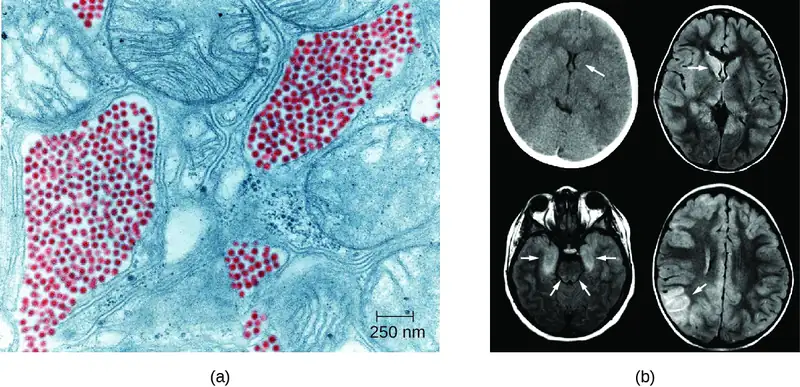
St. Louis encephalitis (SLE), caused by St. Louis encephalitis virus (SLEV), is a rare form of encephalitis with symptoms occurring in fewer than 1% of infected patients. The natural reservoirs for SLEV are birds. SLEV is most often found in the Ohio-Mississippi River basin of the central United States and was named after a severe outbreak in Missouri in 1934. The worst outbreak of St. Louis encephalitis occurred in 1975, with over 2000 cases reported.22 Humans become infected when bitten by C. tarsalis, C. quinquefasciatus, or C. pipiens mosquitoes carrying SLEV. Most patients are asymptomatic, but in a small number of individuals, symptoms range from mild flu-like syndromes to fatal encephalitis. The overall mortality rate for symptomatic patients is 5–15%.23
Japanese encephalitis, caused by Japanese encephalitis virus (JEV), is the leading cause of vaccine-preventable encephalitis in humans and is endemic to some of the most populous countries in the world, including China, India, Japan, and all of Southeast Asia. JEV is transmitted to humans by Culex mosquitoes, usually the species C. tritaeniorhynchus. The biological reservoirs for JEV include pigs and wading birds. Most patients with JEV infections are asymptomatic, with symptoms occurring in fewer than 1% of infected individuals. However, about 25% of those who do develop encephalitis die, and among those who recover, 30–50% have psychiatric, neurologic, or cognitive impairment.24 Fortunately, there is an effective vaccine that can prevent infection with JEV. The CDC recommends this vaccine for travelers who expect to spend more than one month in endemic areas.
As the name suggests, West Nile virus (WNV) and its associated disease, West Nile encephalitis (WNE), did not originate in North America. Until 1999, it was endemic in the Middle East, Africa, and Asia; however, the first US cases were identified in New York in 1999, and by 2004, the virus had spread across the entire continental United States. Over 35,000 cases, including 1400 deaths, were confirmed in the five-year period between 1999 and 2004. WNV infection remains reportable to the CDC.
WNV is transmitted to humans by Culex mosquitoes from its natural reservoir, infected birds, with 70–80% of infected patients experiencing no symptoms. Most symptomatic cases involve only mild, flu-like symptoms, but fewer than 1% of infected people develop severe and sometimes fatal encephalitis or meningitis. The mortality rate in WNV patients who develop neurological disease is about 10%. More information about West Nile virus can be found in Modes of Disease Transmission.
Link to Learning
This interactive map identifies cases of several arboviral diseases in humans and reservoir species by state and year for the United States.
Check Your Understanding
- Why is it unlikely that arboviral encephalitis viruses will be eradicated in the future?
- Which is the most common form of viral encephalitis in the United States?
Clinical Focus: Part 2
Levofloxacin is a quinolone antibiotic that is often prescribed to treat bacterial infections of the respiratory tract, including pneumonia and bronchitis. But after taking the medication for a week, David returned to his physician sicker than before. He claimed that the antibiotic had no effect on his earlier symptoms. In addition, he now was experiencing headaches, a stiff neck, and difficulty focusing at work. He also showed the doctor a rash that had developed on his arms over the past week. His doctor, more concerned now, began to ask about David's activities over the past two weeks.
David explained that he had been recently working on a project to disassemble an old barn. His doctor collected sputum samples and scrapings from David’s rash for cultures. A spinal tap was also performed to examine David’s CSF. Microscopic examination of his CSF revealed encapsulated yeast cells. Based on this result, the doctor prescribed a new antimicrobial therapy using amphotericin B and flucytosine.
- Why was the original treatment ineffective?
- Why is the presence of a capsule clinically important?
Jump to the previous Clinical Focus box. Jump to the next Clinical Focus box.
Zika Virus Infection¶
Zika virus infection is an emerging arboviral disease associated with human illness in Africa, Southeast Asia, and South and Central America; however, its range is expanding as a result of the widespread range of its mosquito vector. The first cases originating in the United States were reported in 2016.The Zika virus was initially described in 1947 from monkeys in the Zika Forest of Uganda through a network that monitored yellow fever. It was not considered a serious human pathogen until the first large-scale outbreaks occurred in Micronesia in 2007;25 however, the virus has gained notoriety over the past decade, as it has emerged as a cause of symptoms similar to other arboviral infections that include fever, skin rashes, conjunctivitis, muscle and joint pain, malaise, and headache. Mosquitoes of the Aedes genus are the primary vectors, although the virus can also be transmitted sexually, to a fetus during pregnancy, or through a blood transfusion.
Most Zika virus infections result in mild symptoms such as fever, a slight rash, or conjunctivitis. However, infections in pregnant people can adversely affect the developing fetus. Reports in 2015 indicate fetal infections can result in brain damage, including a serious birth defect called microcephaly, in which the infant is born with an abnormally small head (Figure 26.14).26
Diagnosis of Zika is primarily based on clinical symptoms. However, the FDA recently authorized the use of a Zika virus RNA assay, Trioplex RT-PCR, and Zika MAC-ELISA to test patient blood and urine to confirm Zika virus disease. There are currently no antiviral treatments or vaccines for Zika virus, and treatment is limited to supportive care.
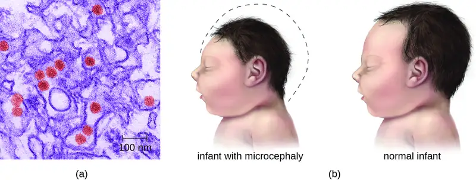
Check Your Understanding
- What are the signs and symptoms of Zika virus infection in adults?
- Why is Zika virus infection considered a serious public health threat?
Rabies¶
Rabies is a deadly zoonotic disease that has been known since antiquity. The disease is caused by rabies virus (RV), a member of the family Rhabdoviridae, and is primarily transmitted through the bite of an infected mammal. Rhabdoviridae are enveloped RNA viruses that have a distinctive bullet shape (Figure 26.15); they were first studied by Louis Pasteur, who obtained rabies virus from rabid dogs and cultivated the virus in rabbits. He successfully prepared a rabies vaccine using dried nerve tissues from infected animals. This vaccine was used to first treat an infected human in 1885.
The most common reservoirs in the United States are wild animals such as raccoons (30.2% of all animal cases during 2014), bats (29.1%), skunks (26.3%), and foxes (4.1%); collectively, these animals were responsible for a total of 92.6% of animal rabies cases in the United States in 2014. The remaining 7.4% of cases that year were in domesticated animals such as dogs, cats, horses, mules, sheep, goats, and llamas.27 While there are typically only one or two human cases per year in the United States, rabies still causes tens of thousands of human deaths per year worldwide, primarily in Asia and Africa.
The low incidence of rabies in the United States is primarily a result of the widespread vaccination of dogs and cats. An oral vaccine is also used to protect wild animals, such as raccoons and foxes, from infection. Oral vaccine programs tend to focus on geographic areas where rabies is endemic.28 The oral vaccine is usually delivered in a package of bait that is dropped by airplane, although baiting in urban areas is done by hand to maximize safety.29 Many countries require a quarantine or proof of rabies vaccination for domestic pets being brought into the country. These procedures are especially strict in island nations where rabies infections are rare, such as Australia.
The incubation period for rabies can be lengthy, ranging from several weeks or months to over a year. As the virus replicates, it moves from the site of the bite into motor and sensory axons of peripheral nerves and spreads from nerve to nerve using a process called retrograde transport, eventually making its way to the CNS through the spinal ganglia. Once rabies virus reaches the brain, the infection leads to encephalitis caused by the disruption of normal neurotransmitter function, resulting in the symptoms associated with rabies. The virions act in the synaptic spaces as competitors with a variety of neurotransmitters for acetylcholine, GABA, and glycine receptors. Thus, the action of rabies virus is neurotoxic rather than cytotoxic. After the rabies virus infects the brain, it can continue to spread through other neuronal pathways, traveling out of the CNS to tissues such as the salivary glands, where the virus can be released. As a result, as the disease progresses the virus can be found in many other tissues, including the salivary glands, taste buds, nasal cavity, and tears.
The early symptoms of rabies include discomfort at the site of the bite, fever, and headache. Once the virus reaches the brain and later symptoms appear, the disease is always fatal. Terminal rabies cases can end in one of two ways: either furious or paralytic rabies. Individuals with furious rabies become very agitated and hyperactive. Hydrophobia (a fear of water) is common in patients with furious rabies, which is caused by muscular spasms in the throat when swallowing or thinking about water. Excess salivation and a desire to bite can lead to foaming of the mouth. These behaviors serve to enhance the likelihood of viral transmission, although contact with infected secretions like saliva or tears alone is sufficient for infection. The disease culminates after just a few days with terror and confusion, followed by cardiovascular and respiratory arrest. In contrast, individuals with paralytic rabies generally follow a longer course of disease. The muscles at the site of infection become paralyzed. Over a period of time, the paralysis slowly spreads throughout the body. This paralytic form of disease culminates in coma and death.
Before present-day diagnostic methods were available, rabies diagnosis was made using a clinical case history and histopathological examination of biopsy or autopsy tissues, looking for the presence of Negri bodies. We now know these histologic changes cannot be used to confirm a rabies diagnosis. There are no tests that can detect rabies virus in humans at the time of the bite or shortly thereafter. Once the virus has begun to replicate (but before clinical symptoms occur), the virus can be detected using an immunofluorescence test on cutaneous nerves found at the base of hair follicles. Saliva can also be tested for viral genetic material by reverse transcription followed by polymerase chain reaction (RT-PCR). Even when these tests are performed, most suspected infections are treated as positive in the absence of contravening evidence. It is better that patients undergo unnecessary therapy because of a false-positive result, rather than die as the result of a false-negative result.
Human rabies infections are treated by immunization with multiple doses of an attenuated vaccine to develop active immunity in the patient (see the Clinical Focus feature in the chapter on Acellular Pathogens). Vaccination of an already-infected individual has the potential to work because of the slow progress of the disease, which allows time for the patient’s immune system to develop antibodies against the virus. Patients may also be treated with human rabies immune globulin (antibodies to the rabies virus) to encourage passive immunity. These antibodies will neutralize any free viral particles. Although the rabies infection progresses slowly in peripheral tissues, patients are not normally able to mount a protective immune response on their own.
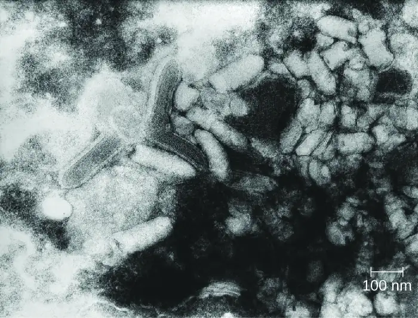
Check Your Understanding
- How does the bite from an infected animal transmit rabies?
- What is the goal of wildlife vaccination programs for rabies?
- How is rabies treated in a human?
Poliomyelitis¶
Poliomyelitis (polio), caused by poliovirus, is a primarily intestinal disease that, in a small percentage of cases, proceeds to the nervous system, causing paralysis and, potentially, death. Poliovirus is highly contagious, with transmission occurring by the fecal-oral route or by aerosol or droplet transmission. Approximately 72% of all poliovirus infections are asymptomatic; another 25% result only in mild intestinal disease, producing nausea, fever, and headache.30 However, even in the absence of symptoms, patients infected with the virus can shed it in feces and oral secretions, potentially transmitting the virus to others. In about one case in every 200, the poliovirus affects cells in the CNS.31
After it enters through the mouth, initial replication of poliovirus occurs at the site of implantation in the pharynx and gastrointestinal tract. As the infection progresses, poliovirus is usually present in the throat and in the stool before the onset of symptoms. One week after the onset of symptoms, there is less poliovirus in the throat, but for several weeks, poliovirus continues to be excreted in the stool. Poliovirus invades local lymphoid tissue, enters the bloodstream, and then may infect cells of the CNS. Replication of poliovirus in motor neurons of the anterior horn cells in the spinal cord, brain stem, or motor cortex results in cell destruction and leads to flaccid paralysis. In severe cases, this can involve the respiratory system, leading to death. Patients with impaired respiratory function are treated using positive-pressure ventilation systems. In the past, patients were sometimes confined to Emerson respirators, also known as iron lungs (Figure 26.16).
Direct detection of the poliovirus from the throat or feces can be achieved using reverse transcriptase PCR (RT-PCR) or genomic sequencing to identify the genotype of the poliovirus infecting the patient. Serological tests can be used to determine whether the patient has been previously vaccinated. There are no therapeutic measures for polio; treatment is limited to various supportive measures. These include pain relievers, rest, heat therapy to ease muscle spasms, physical therapy and corrective braces if necessary to help with walking, and mechanical ventilation to assist with breathing if necessary.
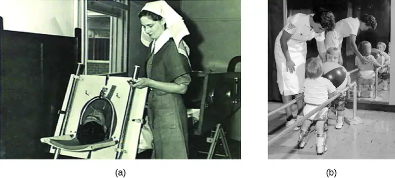
Two different vaccines were introduced in the 1950s that have led to the dramatic decrease in polio worldwide (Figure 26.17). The Salk vaccine is an inactivated polio virus that was first introduced in 1955. This vaccine is delivered by intramuscular injection. The Sabin vaccine is an oral polio vaccine that contains an attenuated virus; it was licensed for use in 1962. There are three serotypes of poliovirus that cause disease in humans; both the Salk and the Sabin vaccines are effective against all three.
Attenuated viruses from the Sabin vaccine are shed in the feces of immunized individuals and thus have the potential to infect nonimmunized individuals. By the late 1990s, the few polio cases originating in the United States could be traced back to the Sabin vaccine. In these cases, mutations of the attenuated virus following vaccination likely allowed the microbe to revert to a virulent form. For this reason, the United States switched exclusively to the Salk vaccine in 2000. Because the Salk vaccine contains an inactivated virus, there is no risk of transmission to others (see Vaccines). Currently four doses of the vaccine are recommended for children: at 2, 4, and 6–18 months of age, and at 4–6 years of age.
In 1988, WHO launched the Global Polio Eradication Initiative with the goal of eradicating polio worldwide through immunization. That goal is now close to being realized. Polio is now endemic in only a few countries, including Afghanistan, Pakistan, and Nigeria, where vaccination efforts have been disrupted by military conflict or political instability.
Micro Connections: The Terror of Polio
In the years after World War II, the United States and the Soviet Union entered a period known as the Cold War. Although there was no armed conflict, the two super powers were diplomatically and economically isolated from each other, as represented by the so-called Iron Curtain between the Soviet Union and the rest of the world. After 1950, migration or travel outside of the Soviet Union was exceedingly difficult, and it was equally difficult for foreigners to enter the Soviet Union. The United States also placed strict limits on Soviets entering the country. During the Eisenhower administration, only 20 graduate students from the Soviet Union were allowed to come to study in the United States per year.
Yet even the Iron Curtain was no match for polio. The Salk vaccine became widely available in the West in 1955, and by the time the Sabin vaccine was ready for clinical trials, most of the susceptible population in the United States and Canada had already been vaccinated against polio. Sabin needed to look elsewhere for study participants. At the height of the Cold War, Mikhail Chumakov was allowed to come to the United States to study Sabin’s work. Likewise, Sabin, an American microbiologist, was allowed to travel to the Soviet Union to begin clinical trials. Chumakov organized Soviet-based production and managed the experimental trials to test the new vaccine in the Soviet Union. By 1959, over ten million Soviet children had been safely treated with Sabin’s vaccine.
As a result of a global vaccination campaign with the Sabin vaccine, the overall incidence of polio has dropped dramatically. Today, polio has been nearly eliminated around the world and is only rarely seen in the United States. Perhaps one day soon, polio will become the third microbial disease to be eradicated from the general population [small pox and rinderpest (the cause of cattle plague) being the first two].
Check Your Understanding
- How is poliovirus transmitted?
- Compare the pros and cons of each of the two polio vaccines.
Transmissible Spongiform Encephalopathies¶
Acellular infectious agents called prions are responsible for a group of related diseases known as transmissible spongiform encephalopathies (TSEs) that occurs in humans and other animals (see Viroids, Virusoids, and Prions). All TSEs are degenerative, fatal neurological diseases that occur when brain tissue becomes infected by prions. These diseases have a slow onset; symptoms may not become apparent until after an incubation period of years and perhaps decades, but death usually occurs within months to a few years after the first symptoms appear.
TSEs in animals include scrapie, a disease in sheep that has been known since the 1700s, and chronic wasting disease, a disease of deer and elk in the United States and Canada. Mad cow disease is seen in cattle and can be transmitted to humans through the consumption of infected nerve tissues. Human prion diseases include Creutzfeldt-Jakob disease and kuru, a rare disease endemic to Papua New Guinea.
Prions are infectious proteinaceous particles that are not viruses and do not contain nucleic acid. They are typically transmitted by exposure to and ingestion of infected nervous system tissues, tissue transplants, blood transfusions, or contaminated fomites. Prion proteins are normally found in a healthy brain tissue in a form called PrPC. However, if this protein is misfolded into a denatured form (PrPSc), it can cause disease. Although the exact function of PrPC is not currently understood, the protein folds into mostly alpha helices and binds copper. The rogue protein, on the other hand, folds predominantly into beta-pleated sheets and is resistant to proteolysis. In addition, PrPSc can induce PrPC to become misfolded and produce more rogue protein (Figure 26.18).
As PrPSc accumulates, it aggregates and forms fibrils within nerve cells. These protein complexes ultimately cause the cells to die. As a consequence, brain tissues of infected individuals form masses of neurofibrillary tangles and amyloid plaques that give the brain a spongy appearance, which is why these diseases are called spongiform encephalopathy (Figure 6.26). Damage to brain tissue results in a variety of neurological symptoms. Most commonly, affected individuals suffer from memory loss, personality changes, blurred vision, uncoordinated movements, and insomnia. These symptoms gradually worsen over time and culminate in coma and death.
The gold standard for diagnosing TSE is the histological examination of brain biopsies for the presence of characteristic amyloid plaques, vacuoles, and prion proteins. Great care must be taken by clinicians when handling suspected prion-infected materials to avoid becoming infected themselves. Other tissue assays search for the presence of the 14-3-3 protein, a marker for prion diseases like Creutzfeldt-Jakob disease. New assays, like RT-QuIC (real-time quaking-induced conversion), offer new hope to effectively detect the abnormal prion proteins in tissues earlier in the course of infection. Prion diseases cannot be cured. However, some medications may help slow their progress. Medical support is focused on keeping patients as comfortable as possible despite progressive and debilitating symptoms.
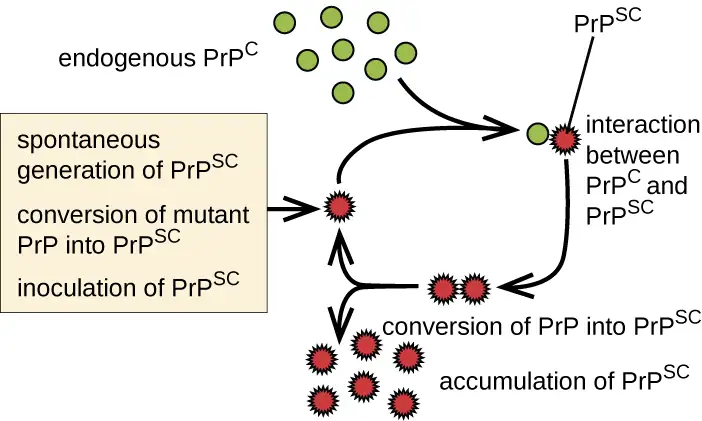
Link to Learning
Because prion-contaminated materials are potential sources of infection for clinical scientists and physicians, both the World Health Organization and CDC provide information to inform, educate and minimize the risk of infections due to prions.
Check Your Understanding
- Do prions reproduce in the conventional sense?
- What is the connection between prions and the removal of animal byproducts from the food of farm animals?
Disease Profile: Acellular Infections of the Nervous System
Serious consequences are the common thread among these neurological diseases. Several cause debilitating paralysis, and some, such as Creutzfeldt-Jakob disease and rabies, are always or nearly always fatal. Since few drugs are available to combat these infections, vector control and vaccination are critical for prevention and containment. Figure 26.19 summarizes some important viral and prion infections of the nervous system.
![Table titled: Acellular Infections of the Nervous System. Columns: Disease; Pathogen; Signs and Symptoms; Transmission; Diagnostic Tests; Antimicrobial Drugs; Vaccine. Disease: Arboviral encephalitis (eastern equine, western equine, St. Louis, West Nile, Japanese); EEEV, WEEV, SLEV, WNV, JEV; In mild cases, fever, chills, headaches, and restlessness; in serious cases, encephalitis leading to convulsions, coma, and death; From bird reservoirs to humans (and horses) by mosquito vectors of various species; Serologic testing of serum or CSF; None; Human vaccine available for JEV only; no vaccines available for other arboviruses. Disease: Creutzfeldt-Jacob Disease and other TSEs; Prions; Memory loss, confusion, blurred vision, uncoordinated movement, insomnia, coma, death; Exposure to infected nerve tissue via consumption or transplant, inherited; Tissue biopsy; no drug or vaccine. Disease: Poliomyelitis; Poliovirus; Asymptomatic or mild nausea, fever, headache in most cases; in neurological infections, flaccid paralysis and potentially fatal respiratory paralysis; Fecal-oral route or contact with droplets or aerosols ; Culture of poliovirus, PCR; None; Attenuated vaccine (Sabin), killed vaccine (Salk). Disease: Rabies; Rabies virus (RV); Fever, headaches, hyperactivity, hydrophobia, excessive salivation, terrors, confusion, spreading paralysis, coma, always fatal if not promptly treated; From bite of infected mammal; Viral antigen in tissue, antibodies to virus; Attenuated vaccine, rabies immunoglobulin; Attenuated vaccine. Disease: Viral meningitis; HSV-1, HSV-2, varicella zoster virus, mumps virus, influenza virus, measles virus; Nausea, vomiting, photophobia, stiff neck, confusion, symptoms generally resolve within 7–10 days; Sequela of primary viral infection; Testing of oral, fecal, blood, or CSF samples; Varies depending on cause; Varies depending on cause. Disease: Zika virus infection; Zika virus Fever, rash, conjunctivitis; in pregnant people, can cause fetal brain damage and microcephaly; Between humans by Aedes spp. mosquito vectors, also may be transmitted sexually or via blood transfusion; Zika virus RNA assay, Trioplex RT-PCR, Zika MAC-ELISA test; No drug or vaccine.](img/osc-microbio-26-03-aceltbl.webp)
26.4 Fungal and Parasitic Diseases of the Nervous System¶
Learning Objectives
By the end of this section, you will be able to:
- Identify the most common fungi that can cause infections of the nervous system
- Compare the major characteristics of specific fungal diseases affecting the nervous system
Fungal infections of the nervous system, called neuromycoses, are rare in healthy individuals. However, neuromycoses can be devastating in immunocompromised or elderly patients. Several eukaryotic parasites are also capable of infecting the nervous system of human hosts. Although relatively uncommon, these infections can also be life-threatening in immunocompromised individuals. In this section, we will first discuss neuromycoses, followed by parasitic infections of the nervous system.
Cryptococcocal Meningitis¶
Cryptococcus neoformans is a fungal pathogen that can cause meningitis. This yeast is commonly found in soils and is particularly associated with pigeon droppings. It has a thick capsule that serves as an important virulence factor, inhibiting clearance by phagocytosis. Most C. neoformans cases result in subclinical respiratory infections that, in healthy individuals, generally resolve spontaneously with no long-term consequences (see Respiratory Mycoses). In immunocompromised patients or those with other underlying illnesses, the infection can progress to cause meningitis and granuloma formation in brain tissues. Cryptococcus antigens can also serve to inhibit cell-mediated immunity and delayed-type hypersensitivity.
Cryptococcus can be easily cultured in the laboratory and identified based on its extensive capsule (Figure 26.20). C. neoformans is frequently cultured from urine samples of patients with disseminated infections.
Prolonged treatment with antifungal drugs is required to treat cryptococcal infections. Combined therapy is required with amphotericin B plus flucytosine for at least 10 weeks. Many antifungal drugs have difficulty crossing the blood-brain barrier and have strong side effects that necessitate low doses; these factors contribute to the lengthy time of treatment. Patients with AIDS are particularly susceptible to Cryptococcus infections because of their compromised immune state. AIDS patients with cryptococcosis can also be treated with antifungal drugs, but they often have relapses; lifelong doses of fluconazole may be necessary to prevent reinfection.
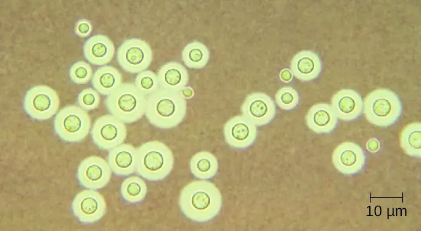
Check Your Understanding
- Why are neuromycoses infections rare in the general population?
- How is a cryptococcal infection acquired?
Disease Profile: Neuromycoses
Neuromycoses typically occur only in immunocompromised individuals and usually only invade the nervous system after first infecting a different body system. As such, many diseases that sometimes affect the nervous system have already been discussed in previous chapters. Figure 26.21 presents some of the most common fungal infections associated with neurological disease. This table includes only the neurological aspects associated with these diseases; it does not include characteristics associated with other body systems.
![Table titled: Neuromycoses. Columns: Disease; Pathogen; Signs and Symptoms; Transmission; Diagnostic Tests; Antimicrobial Drugs. Disease: Aspergillosis; Aspergillus fumigatus; Meningitis, brain abscesses; Dissemination from respiratory infection; CSF, routine culture; Amphotericin B, voriconazole. Disease: Candidiasis; Candida albicans; Meningitis; Oropharynx or urogenital; CSF, routine culture; Amphotericin B, flucytosine. Disease: Coccidioidomycosis (Valley fever); Coccidioides immitis; Meningitis (in about 1% of infections); Dissemination from respiratory infection; CSF, routine culture; Amphotericin B, azoles. Disease: Cryptococcosis; Cryptococcus neoformans; Meningitis, granuloma formation in brain; Inhalation; Negative stain of CSF, routine culture; Amphotericin B, flucytosine. Disease: Histoplasmosis; Histoplasma capsulatum; Meningitis, granulomas in the brain; Dissemination from respiratory infection; CSF, routine culture; Amphotericin B, itraconazole. Disease: Mucormycosis; Rhizopus arrhizus; Brain abscess; Nasopharynx ; CSF, routine culture; Amphotericin B, azoles.](img/osc-microbio-26-04-neuromycos.webp)
Clinical Focus: Resolution
David’s new prescription for two antifungal drugs, amphotericin B and flucytosine, proved effective, and his condition began to improve. Culture results from David’s sputum, skin, and CSF samples confirmed a fungal infection. All were positive for C. neoformans. Serological tests of his tissues were also positive for the C. neoformans capsular polysaccharide antigen.
Since C. neoformans is known to occur in bird droppings, it is likely that David had been exposed to the fungus while working on the barn. Despite this exposure, David’s doctor explained to him that immunocompetent people rarely contract cryptococcal meningitis and that his immune system had likely been compromised by the anti-inflammatory medication he was taking to treat his Crohn’s disease. However, to rule out other possible causes of immunodeficiency, David’s doctor recommended that he be tested for HIV.
After David tested negative for HIV, his doctor took him off the corticosteroid he was using to manage his Crohn’s disease, replacing it with a different class of drug. After several weeks of antifungal treatments, David managed a full recovery.
Jump to the previous Clinical Focus box.
Amoebic Meningitis¶
Primary amoebic meningoencephalitis (PAM) is caused by Naegleria fowleri. This amoeboflagellate is commonly found free-living in soils and water. It can exist in one of three forms—the infective amoebic trophozoite form, a motile flagellate form, and a resting cyst form. PAM is a rare disease that has been associated with young and otherwise healthy individuals. Individuals are typically infected by the amoeba while swimming in warm bodies of freshwater such as rivers, lakes, and hot springs. The pathogenic trophozoite infects the brain by initially entering through nasal passages to the sinuses; it then moves down olfactory nerve fibers to penetrate the submucosal nervous plexus, invades the cribriform plate, and reaches the subarachnoid space. The subarachnoid space is highly vascularized and is a route of dissemination of trophozoites to other areas of the CNS, including the brain (Figure 26.22). Inflammation and destruction of gray matter leads to severe headaches and fever. Within days, confusion and convulsions occur and quickly progress to seizures, coma, and death. The progression can be very rapid, and the disease is often not diagnosed until autopsy.
N. fowleri infections can be confirmed by direct observation of CSF; the amoebae can often be seen moving while viewing a fresh CSF wet mount through a microscope. Flagellated forms can occasionally also be found in CSF. The amoebae can be stained with several stains for identification, including Giemsa-Wright or a modified trichrome stain. Detection of antigens with indirect immunofluorescence, or genetic analysis with PCR, can be used to confirm an initial diagnosis. N. fowleri infections are nearly always fatal; only 3 of 138 patients with PAM in the United States have survived.32 A new experimental drug called miltefosine shows some promise for treating these infections. This drug is a phosphotidylcholine derivative that is thought to inhibit membrane function in N. fowleri, triggering apoptosis and disturbance of lipid-dependent cell signaling pathways.33 When administered early in infection and coupled with therapeutic hypothermia (lowering the body’s core temperature to reduce the cerebral edema associated with infection), this drug has been successfully used to treat primary amoebic encephalitis.
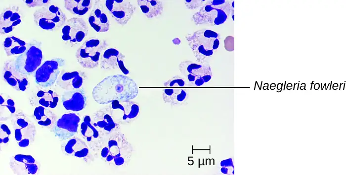
Granulomatous Amoebic Encephalitis¶
Acanthamoeba and Balamuthia species are free-living amoebae found in many bodies of fresh water. Human infections by these amoebae are rare. However, they can cause amoebic keratitis in contact lens wearers (see Protozoan and Helminthic Infections of the Eyes), disseminated infections in immunocompromised patients, and granulomatous amoebic encephalitis (GAE) in severe cases. Compared to PAM, GAE tend to be subacute infections. The microbe is thought to enter through either the nasal sinuses or breaks in the skin. It is disseminated hematogenously and can invade the CNS. There, the infections lead to inflammation, formation of lesions, and development of typical neurological symptoms of encephalitis (Figure 26.23). GAE is nearly always fatal.
GAE is often not diagnosed until late in the infection. Lesions caused by the infection can be detected using CT or MRI. The live amoebae can be directly detected in CSF or tissue biopsies. Serological tests are available but generally are not necessary to make a correct diagnosis, since the presence of the organism in CSF is definitive. Some antifungal drugs, like fluconazole, have been used to treat acanthamoebal infections. In addition, a combination of miltefosine and voriconazole (an inhibitor of ergosterol biosynthesis) has recently been used to successfully treat GAE. Even with treatment, however, the mortality rate for patients with these infections is high.
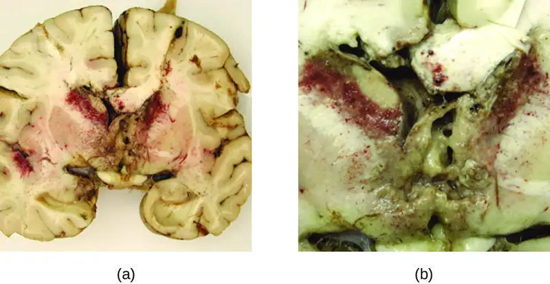
Check Your Understanding
- How is granulomatous amoebic encephalitis diagnosed?
Human African Trypanosomiasis¶
Human African trypanosomiasis (also known as African sleeping sickness) is a serious disease endemic to two distinct regions in sub-Saharan Africa. It is caused by the insect-borne hemoflagellate Trypanosoma brucei. The subspecies Trypanosoma brucei rhodesiense causes East African trypanosomiasis (EAT), and another subspecies, Trypanosoma brucei gambiense causes West African trypanosomiasis (WAT). A few hundred cases of EAT are currently reported each year.34 WAT is more commonly reported and tends to be a more chronic disease. Around 7000 to 10,000 new cases of WAT are identified each year.35
T. brucei is primarily transmitted to humans by the bite of the tsetse fly (Glossina spp.). Soon after the bite of a tsetse fly, a chancre forms at the site of infection. The flagellates then spread, moving into the circulatory system (Figure 26.24). These systemic infections result in an undulating fever, during which symptoms persist for two or three days with remissions of about a week between bouts. As the disease enters its final phase, the pathogens move from the lymphatics into the CNS. Neurological symptoms include daytime sleepiness, insomnia, and mental deterioration. In EAT, the disease runs its course over a span of weeks to months. In contrast, WAT often occurs over a span of months to years.
Although a strong immune response is mounted against the trypanosome, it is not sufficient to eliminate the pathogen. Through antigenic variation, Trypanosoma can change their surface proteins into over 100 serological types. This variation leads to the undulating form of the initial disease. The initial septicemia caused by the infection leads to high fevers. As the immune system responds to the infection, the number of organisms decrease, and the clinical symptoms abate. However, a subpopulation of the pathogen then alters its surface coat antigens by antigenic variation and evades the immune response. These flagellates rapidly proliferate and cause another bout of disease. If untreated, these infections are usually fatal.
Clinical symptoms can be used to recognize the early signs of African trypanosomiasis. These include the formation of a chancre at the site of infection and Winterbottom’s sign. Winterbottom’s sign refers to the enlargement of lymph nodes on the back of the neck—often indicative of cerebral infections. Trypanosoma can be directly observed in stained samples including blood, lymph, CSF, and skin biopsies of chancres from patients. Antibodies against the parasite are found in most patients with acute or chronic disease. Serologic testing is generally not used for diagnosis, however, since the microscopic detection of the parasite is sufficient. Early diagnosis is important for treatment. Before the nervous system is involved, drugs like pentamidine (an inhibitor of nuclear metabolism) and suramin (mechanism unclear) can be used. These drugs have fewer side effects than the drugs needed to treat the second stage of the disease. Once the sleeping sickness phase has begun, harsher drugs including melarsoprol (an arsenic derivative) and eflornithine can be effective. Following successful treatment, patients still need to have follow-up examinations of their CSF for two years to detect possible relapses of the disease. The most effective means of preventing these diseases is to control the insect vector populations.
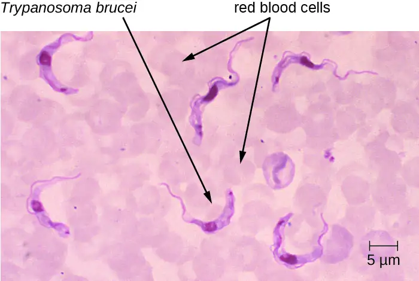
Check Your Understanding
- What is the symptom of a systemic Trypanosoma infection?
- What are the symptoms of a neurological Trypanosoma infection?
- Why are trypanosome infections so difficult to eradicate?
Neurotoxoplasmosis¶
Toxoplasma gondii is an ubiquitous intracellular parasite that can cause neonatal infections. Cats are the definitive host, and humans can become infected after eating infected meat or, more commonly, by ingesting oocysts shed in the feces of cats (see Parasitic Infections of the Circulatory and Lymphatic Systems). T. gondii enters the circulatory system by passing between the endothelial cells of blood vessels.36 Most cases of toxoplasmosis are asymptomatic. However, in immunocompromised patients, neurotoxoplasmosis caused by T. gondii infections are one of the most common causes of brain abscesses.37 The organism is able to cross the blood-brain barrier by infecting the endothelial cells of capillaries in the brain. The parasite reproduces within these cells, a step that appears to be necessary for entry to the brain, and then causes the endothelial cell to lyse, releasing the progeny into brain tissues. This mechanism is quite different than the method it uses to enter the bloodstream in the first place.38
The brain lesions associated with neurotoxoplasmosis can be detected radiographically using MRI or CAT scans (Figure 26.25). Diagnosis can be confirmed by direct observation of the organism in CSF. RT-PCR assays can also be used to detect T. gondii through genetic markers.
Treatment of neurotoxoplasmosis caused by T. gondii infections requires six weeks of multi-drug therapy with pyrimethamine, sulfadiazine, and folinic acid. Long-term maintenance doses are often required to prevent recurrence.
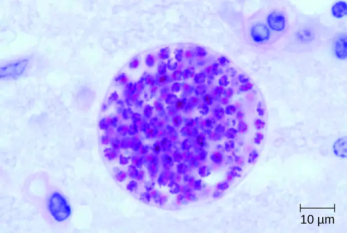
Check Your Understanding
- Under what conditions is Toxoplasma infection serious?
- How does Toxoplasma circumvent the blood-brain barrier?
Neurocysticercosis¶
Cysticercosis is a parasitic infection caused by the larval form of the pork tapeworm, Taenia solium. When the larvae invade the brain and spinal cord, the condition is referred to as neurocysticercosis. This condition affects millions of people worldwide and is the leading cause of adult onset epilepsy in the developing world.39
The life cycle of T. solium is discussed in Helminthic Infections of the Gastrointestinal Tract. Following ingestion, the eggs hatch in the intestine to form larvae called cysticerci. Adult tapeworms form in the small intestine and produce eggs that are shed in the feces. These eggs can infect other individuals through fecal contamination of food or other surfaces. Eggs can also hatch within the intestine of the original patient and lead to an ongoing autoinfection. The cystercerci, can migrate to the blood and invade many tissues in the body, including the CNS.
Neurocysticercosis is usually diagnosed through noninvasive techniques. Epidemiological information can be used as an initial screen; cysticercosis is endemic in Central and South America, Africa, and Asia. Radiological imaging (MRI and CT scans) is the primary method used to diagnose neurocysticercosis; imaging can be used to detect the one- to two-centimeter cysts that form around the parasites (Figure 26.26). Elevated levels of eosinophils in the blood can also indicate a parasitic infection. EIA and ELISA are also used to detect antigens associated with the pathogen.
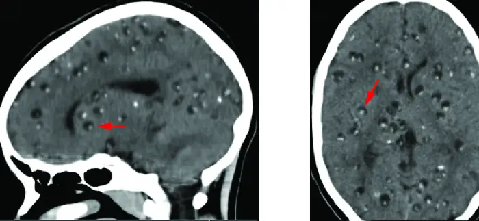
The treatment for neurocysticercosis depends on the location, number, size, and stage of cysticerci present. Antihelminthic chemotherapy includes albendazole and praziquantel. Because these drugs kill viable cysts, they may acutely increase symptoms by provoking an inflammatory response caused by the release of Taenia cysticerci antigens, as the cysts are destroyed by the drugs. To alleviate this response, corticosteroids that cross the blood-brain barrier (e.g., dexamethasone) can be used to mitigate these effects. Surgical intervention may be required to remove intraventricular cysts.
Disease Profile: Parasitic Diseases of the Nervous System
Parasites that successfully invade the nervous system can cause a wide range of neurological signs and symptoms. Often, they inflict lesions that can be visualized through radiologic imaging. A number of these infections are fatal, but some can be treated (with varying levels of success) by antimicrobial drugs (Figure 26.27).
![Table titled: Parasitic Diseases of the Nervous System. Columns: Disease; Pathogen; Signs and Symptoms; Transmission; Diagnostic Tests; Antimicrobial Drugs. Disease: Granulomatous amoebic encephalitis (GAE); Acanthamoeba spp., Balamuthia mandrillaris; Inflammation, lesions in CNS, almost always fatal Freshwater ameobae invade CNS via breaks in skin or sinuses; CT scan, MRI, CSF; Fluconazole, miltefosine, voriconazole. Disease: Human African trypanosomiasis; Trypanosoma brucei gambiense, T. brucei rhodesiense; Chancre, Winterbottom’s sign, undulating fever, lethargy, insomnia, usually fatal if untreated; Protozoan transmitted via bite of tsetse fly; Blood smear; Pentamidine and suramine (initial phase); melarsoprol and eflornithine (final phase). Disease: Neurocysticercosis; Taenia solium; Brain cysts, epilepsy Ingestion of tapeworm eggs in fecally contaminated food or surfaces; CT scan, MRI; Albendazole, praziquantel, dexamethasone. Disease: Neurotoxoplasmosis; Toxoplasma gondii Brain abscesses, chronic encephalitis; Protozoan transmitted via contact with oocytes in cat feces; CT scan, MRI, CSF; Pyrimethamine, sulfadiazine, folinic acid. Disease: Primary amoebic meningoencephalitis (PAM) Naegleria fowleri; Headache, seizures, coma, almost always fatal; Freshwater ameobae invade brain via nasal passages; CSF, IFA, PCR; Miltefosine (experimental).](img/osc-microbio-26-04-paratbl.webp)
Check Your Understanding
- What neurological condition is associated with neurocysticercosis?
- How is neurocysticercosis diagnosed?
Chapter Review¶
Key Concepts and Summary¶
26.1 Anatomy of the Nervous System¶
- The nervous system consists of two subsystems: the central nervous system and peripheral nervous system.
- The skull and three meninges (the dura mater, arachnoid mater, and pia mater) protect the brain.
- Tissues of the PNS and CNS are formed of cells called glial cells and neurons.
- Since the blood-brain barrier excludes most microbes, there is no normal microbiota in the CNS.
- Some pathogens have specific virulence factors that allow them to breach the blood-brain barrier. Inflammation of the brain or meninges caused by infection is called encephalitis or meningitis, respectively. These conditions can lead to blindness, deafness, coma, and death.
26.2 Bacterial Diseases of the Nervous System¶
- Bacterial meningitis can be caused by several species of encapsulated bacteria, including Haemophilus influenzae, Neisseria meningitidis, Streptococcus pneumoniae, and Streptococcus agalactiae (group B streptococci). H. influenzae affects primarily young children and neonates, N. meningitidis is the only communicable pathogen and mostly affects children and young adults, S. pneumoniae affects mostly young children, and S. agalactiae affects newborns during or shortly after birth.
- Symptoms of bacterial meningitis include fever, neck stiffness, headache, confusion, convulsions, coma, and death.
- Diagnosis of bacterial meningitis is made through observations and culture of organisms in CSF. Bacterial meningitis is treated with antibiotics. H. influenzae and N. meningitidis have vaccines available.
- Clostridium species cause neurological diseases, including botulism and tetanus, by producing potent neurotoxins that interfere with neurotransmitter release. The PNS is typically affected. Treatment of Clostridium infection is effective only through early diagnosis with administration of antibiotics to control the infection and antitoxins to neutralize the endotoxin before they enter cells.
- Listeria monocytogenes is a foodborne pathogen that can infect the CNS, causing meningitis. The infection can be spread through the placenta to a fetus. Diagnosis is through culture of blood or CSF. Treatment is with antibiotics and there is no vaccine.
- Hansen’s disease (leprosy) is caused by the intracellular parasite Mycobacterium leprae. Infections cause demylenation of neurons, resulting in decreased sensation in peripheral appendages and body sites. Treatment is with multi-drug antibiotic therapy, and there is no universally recognized vaccine.
26.3 Acellular Diseases of the Nervous System¶
- Viral meningitis is more common and generally less severe than bacterial menigitis. It can result from secondary sequelae of many viruses or be caused by infections of arboviruses.
- Various types of arboviral encephalitis are concentrated in particular geographic locations throughout the world. These mosquito-borne viral infections of the nervous system are typically mild, but they can be life-threatening in some cases.
- Zika virus is an emerging arboviral infection with generally mild symptoms in most individuals, but infections of pregnant people can cause the birth defect microcephaly.
- Polio is typically a mild intestinal infection but can be damaging or fatal if it progresses to a neurological disease.
- Rabies is nearly always fatal when untreated and remains a significant problem worldwide.
- Transmissible spongiform encephalopathies such as Creutzfeldt-Jakob disease and kuru are caused by prions. These diseases are untreatable and ultimately fatal. Similar prion diseases are found in animals.
26.4 Fungal and Parasitic Diseases of the Nervous System¶
- Neuromycoses are uncommon in immunocompetent people, but immunocompromised individuals with fungal infections have high mortality rates. Treatment of neuromycoses require prolonged therapy with antifungal drugs at low doses to avoid side effects and overcome the effect of the blood-brain barrier.
- Some protist infections of the nervous systems are fatal if not treated, including primary amoebic meningitis, granulomatous amoebic encephalitis, human African trypanosomiasis, and neurotoxoplasmosis.
- The various forms of ameobic encephalitis caused by the different amoebic infections are typically fatal even with treatment, but they are rare.
- African trypanosomiasis is a serious but treatable disease endemic to two distinct regions in sub-Saharan Africa caused by the insect-borne hemoflagellate Trypanosoma brucei.
- Neurocysticercosis is treated using antihelminthic drugs or surgery to remove the large cysts from the CNS.
Multiple Choice¶
26.1 Anatomy of the Nervous System¶
1. What is the outermost membrane surrounding the brain called?
- pia mater
- arachnoid mater
- dura mater
- alma mater
Answer
C
2. What term refers to an inflammation of brain tissues?
- encephalitis
- meningitis
- sinusitis
- meningoencephalitis
Answer
A
3. Nerve cells form long projections called ________.
- soma
- axons
- dendrites
- synapses
Answer
B
4. Chemicals called ________ are stored in neurons and released when the cell is stimulated by a signal.
- toxins
- cytokines
- chemokines
- neurotransmitters
Answer
D
5. The central nervous system is made up of
- sensory organs and muscles.
- the brain and muscles.
- the sensory organs and spinal cord.
- the brain and spinal column.
Answer
D
26.2 Bacterial Diseases of the Nervous System¶
6. Which of the following organisms causes epidemic meningitis cases at college campuses?
- Haemophilus influenzae type b
- Neisseria meningitidis
- Streptococcus pneumoniae
- Listeria monocytogenes
Answer
B
7. Which of the following is the most common cause of neonatal meningitis?
- Haemophilus influenzae b
- Streptococcus agalactiae
- Neisseria meningitidis
- Streptococcus pneumoniae
Answer
B
8. What sign/symptom would NOT be associated with infant botulism?
- difficulty suckling
- limp body
- stiff neck
- weak cry
Answer
C
9. Which of the following can NOT be prevented with a vaccine?
- tetanus
- pneumococcal meningitis
- meningococcal meningitis
- listeriosis
Answer
D
10. How is leprosy primarily transmitted from person to person?
- contaminated toilet seats
- shaking hands
- blowing nose
- sexual intercourse
Answer
C
26.3 Acellular Diseases of the Nervous System¶
11. Which of these diseases can be prevented with a vaccine for humans?
- eastern equine encephalitis
- western equine encephalitis
- West Nile encephalitis
- Japanese encephalitis
Answer
D
12. Which of these diseases does NOT require the introduction of foreign nucleic acid?
- kuru
- polio
- rabies
- St. Louis encephalitis
Answer
A
13. Which of these is true of the Sabin but NOT the Salk polio vaccine?
- requires four injections
- currently administered in the United States
- mimics the normal route of infection
- is an inactivated vaccine
Answer
C
14. Which of the following animals is NOT a typical reservoir for the spread of rabies?
- dog
- bat
- skunk
- chicken
Answer
D
26.4 Fungal and Parasitic Diseases of the Nervous System¶
15. Which of these diseases results in meningitis caused by an encapsulated yeast?
- cryptococcosis
- histoplasmosis
- candidiasis
- coccidiomycosis
Answer
A
16. What kind of stain is most commonly used to visualize the capsule of cryptococcus?
- Gram stain
- simple stain
- negative stain
- fluorescent stain
Answer
C
17. Which of the following is the causative agent of East African trypanosomiasis?
- Trypanosoma cruzi
- Trypanosoma vivax
- Trypanosoma brucei rhodanese
- Trypanosoma brucei gambiense
Answer
C
18. Which of the following is the causative agent of primary amoebic meningoencephalitis?
- Naegleria fowleri
- Entameba histolyticum
- Amoeba proteus
- Acanthamoeba polyphaga
Answer
A
19. What is the biological vector for African sleeping sickness?
- mosquito
- tsetse fly
- deer tick
- sand fly
Answer
B
20. How do humans usually contract neurocysticercosis?
- the bite of an infected arthropod
- exposure to contaminated cat feces
- swimming in contaminated water
- ingestion of undercooked pork
Answer
D
21. Which of these is the most important cause of adult onset epilepsy?
- neurocysticercosis
- neurotoxoplasmosis
- primary amoebic meningoencephalitis
- African trypanosomiasis
Answer
A
Matching¶
22. Match each strategy for microbial invasion of the CNS with its description.
| ___intercellular entry | A. pathogen gains entry by infecting peripheral white blood cells |
| ___transcellular entry | B. pathogen bypasses the blood-brain barrier by travel along the olfactory or trigeminal cranial nerves |
| ___leukocyte-facilitated entry | C. pathogen passes through the cells of the blood-brain barrier |
| ___nonhematogenous entry | D. pathogen passes between the cells of the blood-brain barrier |
Answer
D, C, A, B
Fill in the Blank¶
26.1 Anatomy of the Nervous System¶
23. The cell body of a neuron is called the ________.
Answer
soma
24. A signal is transmitted down the ________ of a nerve cell.
Answer
axon
25. The ________ is filled with cerebrospinal fluid.
Answer
subarachnoid space
26. The ________ ________ prevents access of microbes in the blood from gaining access to the central nervous system.
Answer
blood-brain barrier
27. The ________ are a set of membranes that cover and protect the brain.
Answer
meninges
26.2 Bacterial Diseases of the Nervous System¶
28. The form of meningitis that can cause epidemics is caused by the pathogen ________.
Answer
Neisseria meningitidis
29. The symptoms of tetanus are caused by the neurotoxin ________.
Answer
tetanospasmin
30. ________ is another name for leprosy.
Answer
Hansen’s disease
31. Botulism prevents the release of the neurotransmitter ________.
Answer
acetylcholine
32. ________ is a neurological disease that can be prevented with the DTaP vaccine.
Answer
Tetanus
33. Tetanus patients exhibit ________ when muscle spasms causes them to arch their backs.
Answer
opisthotonos
26.3 Acellular Diseases of the Nervous System¶
34. The rogue form of the prion protein is called ________.
Answer
PrPSc
35. ________ are the most common reservoir for the rabies virus worldwide.
Answer
Dogs
36. ________ was the scientist who developed the inactivated polio vaccine.
Answer
Jonas Salk
37. ________ is a prion disease of deer and elk.
Answer
Chronic wasting disease
38. The rogue form of prion protein exists primarily in the ________ conformation.
Answer
beta sheet
26.4 Fungal and Parasitic Diseases of the Nervous System¶
39. The ________ is the main virulence factor of Cryptococcus neoformans.
Answer
capsule
40. The drug of choice for fungal infections of the nervous system is ________.
Answer
Amphotericin B
41. The larval forms of a tapeworm are known as ________.
Answer
cysticerci
42. ________ sign appears as swollen lymph nodes at the back of the neck in early African trypanosomiasis.
Answer
Winterbottom’s
43. ________ African trypanosomiasis causes a chronic form of sleeping sickness.
Answer
West
44. The definitive host for Toxoplasma gondii is ________.
Answer
cats
45. Trypanosomes can evade the immune response through ________ variation.
Answer
antigenic
Short Answer¶
26.1 Anatomy of the Nervous System¶
46. Briefly describe the defenses of the brain against trauma and infection.
47. Describe how the blood-brain barrier is formed.
48. Identify the type of cell shown, as well as the following structures: axon, dendrite, myelin sheath, soma, and synapse.
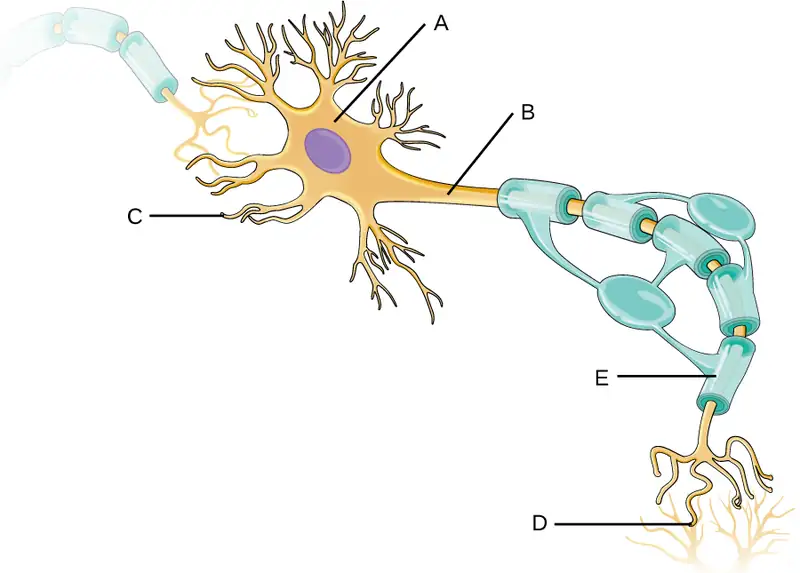
26.2 Bacterial Diseases of the Nervous System¶
49. A physician suspects the lesion and pustule pictured here are indicative of tuberculoid leprosy. If the diagnosis is correct, what microorganism would be found in a skin biopsy?
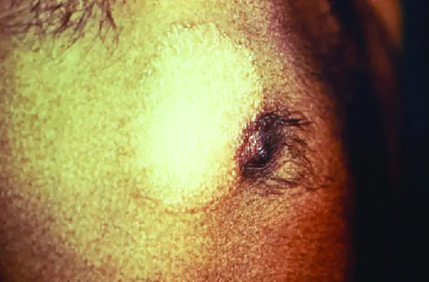
26.3 Acellular Diseases of the Nervous System¶
50. Explain how a person could contract variant Creutzfeldt-Jakob disease by consuming products from a cow with bovine spongiform encephalopathy (mad cow disease).
26.4 Fungal and Parasitic Diseases of the Nervous System¶
51. Why do nervous system infections by fungi require such long treatment times?
52. Briefly describe how humans are infected by Naegleria fowleri.
53. Briefly describe how humans can develop neurocysticercosis.
Critical Thinking¶
26.1 Anatomy of the Nervous System¶
54. What important function does the blood-brain barrier serve? How might this barrier be problematic at times?
26.2 Bacterial Diseases of the Nervous System¶
55. Explain how tetanospasmin functions to cause disease.
56. The most common causes of bacterial meningitis can be the result of infection by three very different bacteria. Which bacteria are they and how are these microbes similar to each other?
57. Explain how infant botulism is different than foodborne botulism.
26.3 Acellular Diseases of the Nervous System¶
58. If the Sabin vaccine is being used to eliminate polio worldwide, explain why a country with a near zero infection rate would opt to use the Salk vaccine but not the Sabin vaccine?
26.4 Fungal and Parasitic Diseases of the Nervous System¶
59. The graph shown tracks the body temperature of a patient infected with Trypanosoma brucei. How would you describe this pattern, and why does it occur?
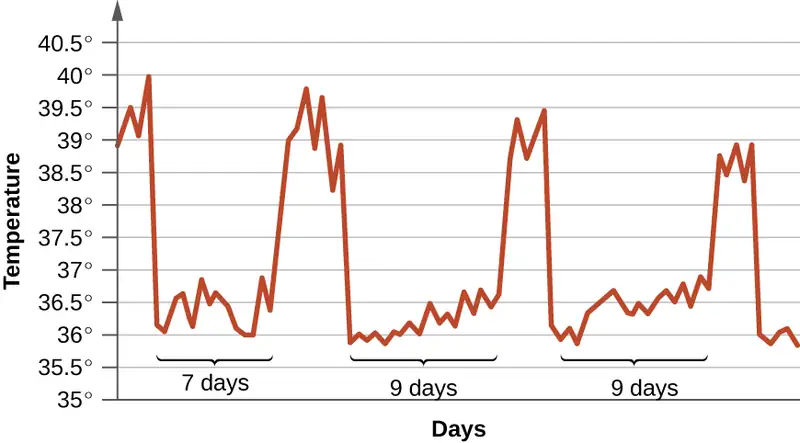
60. Fungal meningoencephalitis is often the ultimate cause of death for AIDS patients. What factors make these infections more problematic than those of bacterial origin?
61. Compare East African trypanosomiasis with West African trypanosomiasis.
Adapted from Microbiology by OpenStax, licensed under CC BY 4.0. Access the original for free at openstax.org. Changes: converted to the web reading format of The Open Book Project.
-
Yuki, Nobuhiro and Hans-Peter Hartung, “Guillain–Barré Syndrome,” New England Journal of Medicine 366, no. 24 (2012): 2294-304. ↩
-
Cao-Lormeau, Van-Mai, Alexandre Blake, Sandrine Mons, Stéphane Lastère, Claudine Roche, Jessica Vanhomwegen, Timothée Dub et al., “Guillain-Barré Syndrome Outbreak Associated with Zika Virus Infection in French Polynesia: A Case-Control Study,” The Lancet 387, no. 10027 (2016): 1531-9. ↩
-
Thigpen, Michael C., Cynthia G. Whitney, Nancy E. Messonnier, Elizabeth R. Zell, Ruth Lynfield, James L. Hadler, Lee H. Harrison et al., “Bacterial Meningitis in the United States, 1998–2007,” New England Journal of Medicine 364, no. 21 (2011): 2016-25. ↩
-
Popovic, T., et al. World Health Organization, “Laboratory Manual for the Diagnosis of Meningitis Caused by Neisseria meningitidis, Streptococcus pneumoniae, and Haemophilus influenza,” 1999. ↩
-
US Centers for Disease Control and Prevention, “Meningococcal Disease,” August 5, 2015. Accessed June 28, 2015. http://www.cdc.gov/meningococcal/surveillance/index.html. ↩
-
US Centers for Disease Control and Prevention, “Recommended Immunization Schedule for Persons Aged 0 Through 18 Years, United States, 2016,” February 1, 2016. Accessed on June 28, 2016. http://www.cdc.gov/vaccines/schedules/hcp/imz/child-adolescent.html. ↩
-
National Meningitis Association, “Serogroup B Meningococcal Disease Outbreaks on U.S. College Campuses,” 2016. Accessed June 28, 2016. http://www.nmaus.org/disease-prevention-information/serogroup-b-meningococcal-disease/outbreaks/. ↩
-
United States Department of Health and Human Services, “Hib (Haemophilus Influenzae Type B),” Accessed June 28, 2016. http://www.vaccines.gov/diseases/hib/#. ↩
-
US Centers for Disease Control and Prevention, “Meningococcal Disease, Disease Trends,” 2015. Accessed September 13, 2016. http://www.cdc.gov/meningococcal/surveillance/index.html. ↩
-
Thigpen, Michael C., Cynthia G. Whitney, Nancy E. Messonnier, Elizabeth R. Zell, Ruth Lynfield, James L. Hadler, Lee H. Harrison et al., “Bacterial Meningitis in the United States, 1998–2007,” New England Journal of Medicine 364, no. 21 (2011): 2016-25. ↩
-
Thigpen, Michael C., Cynthia G. Whitney, Nancy E. Messonnier, Elizabeth R. Zell, Ruth Lynfield, James L. Hadler, Lee H. Harrison et al., “Bacterial Meningitis in the United States, 1998–2007,” New England Journal of Medicine 364, no. 21 (2011): 2016-25; Heath, Paul T., Gail Balfour, Abbie M. Weisner, Androulla Efstratiou, Theresa L. Lamagni, Helen Tighe, Liam AF O’Connell et al., “Group B Streptococcal Disease in UK and Irish Infants Younger than 90 Days,” The Lancet 363, no. 9405 (2004): 292-4. ↩
-
UNFPA, UNICEF WHO, “Maternal and Neonatal Tetanus Elimination by 2005,” 2000. http://www.unicef.org/immunization/files/MNTE_strategy_paper.pdf. ↩
-
US Centers for Disease Control and Prevention, “Tetanus Vaccination,” 2013. Accessed June 29, 2016. http://www.cdc.gov/tetanus/vaccination.html. ↩
-
Scallan, Elaine, Robert M. Hoekstra, Frederick J. Angulo, Robert V. Tauxe, Marc-Alain Widdowson, Sharon L. Roy, Jeffery L. Jones, and Patricia M. Griffin, “Foodborne Illness Acquired in the United States—Major Pathogens,” Emerging Infectious Diseases 17, no. 1 (2011): 7-15. ↩
-
US Centers for Disease Control and Prevention, “Listeria Outbreaks,” 2016. Accessed June 29, 2016. https://www.cdc.gov/listeria/outbreaks/index.html. ↩
-
Sharma, Rahul, Pushpendra Singh, W. J. Loughry, J. Mitchell Lockhart, W. Barry Inman, Malcolm S. Duthie, Maria T. Pena et al., “Zoonotic Leprosy in the Southeastern United States,” Emerging Infectious Diseases 21, no. 12 (2015): 2127-34. ↩
-
World Health Organization, “Leprosy Fact Sheet,” 2016. Accessed September 13, 2016. http://www.who.int/mediacentre/factsheets/fs101/en/. ↩
-
National Park Service, “A Brief History of Kalaupapa,” Accessed February 2, 2016. http://www.nps.gov/kala/learn/historyculture/a-brief-history-of-kalaupapa.htm. ↩
-
US Centers for Disease Control and Prevention, “Eastern Equine Encephalitis Virus Disease Cases and Deaths Reported to CDC by Year and Clinical Presentation, 2004–2013,” 2014. http://www.cdc.gov/EasternEquineEncephalitis/resources/EEEV-Cases-by-Year_2004-2013.pdf. ↩
-
US Centers for Disease Control and Prevention, “Eastern Equine Encephalitis, Symptoms & Treatment, 2016,” Accessed June 29, 2016. https://www.cdc.gov/easternequineencephalitis/tech/symptoms.html. ↩
-
US Centers for Disease Control and Prevention, “Western Equine Encephalitis—United States and Canada, 1987,” Morbidity and Mortality Weekly Report 36, no. 39 (1987): 655. ↩
-
US Centers for Disease Control and Prevention, “Saint Louis encephalitis, Epidemiology & Geographic Distribution,” Accessed June 30, 2016. http://www.cdc.gov/sle/technical/epi.html. ↩
-
US Centers for Disease Control and Prevention, “Saint Louis encephalitis, Symptoms and Treatment,” Accessed June 30, 2016. http://www.cdc.gov/sle/technical/symptoms.html. ↩
-
US Centers for Disease Control and Prevention, “Japanese Encephalitis, Symptoms and Treatment,” Accessed June 30, 2016. http://www.cdc.gov/japaneseencephalitis/symptoms/index.html. ↩
-
Sikka, Veronica, Vijay Kumar Chattu, Raaj K. Popli, Sagar C. Galwankar, Dhanashree Kelkar, Stanley G. Sawicki, Stanislaw P. Stawicki, and Thomas J. Papadimos, “The Emergence of Zika Virus as a Global Health Security Threat: A Review and a Consensus Statement of the INDUSEM Joint Working Group (JWG),” Journal of Global Infectious Diseases 8, no. 1 (2016): 3. ↩
-
Mlakar, Jernej, Misa Korva, Nataša Tul, Mara Popović, Mateja Poljšak-Prijatelj, Jerica Mraz, Marko Kolenc et al., “Zika Virus Associated with Microcephaly,” New England Journal of Medicine 374, no. 10 (2016): 951-8. ↩
-
US Centers for Disease Control and Prevention, “Rabies, Wild Animals,” 2016. Accessed September 13, 2016. http://www.cdc.gov/rabies/location/usa/surveillance/wild_animals.html. ↩
-
Slate, Dennis, Charles E. Rupprecht, Jane A. Rooney, Dennis Donovan, Donald H. Lein, and Richard B. Chipman, “Status of Oral Rabies Vaccination in Wild Carnivores in the United States,” Virus Research 111, no. 1 (2005): 68-76. ↩
-
Finnegan, Christopher J., Sharon M. Brookes, Nicholas Johnson, Jemma Smith, Karen L. Mansfield, Victoria L. Keene, Lorraine M. McElhinney, and Anthony R. Fooks, “Rabies in North America and Europe,” Journal of the Royal Society of Medicine 95, no. 1 (2002): 9-13. http://www.ncbi.nlm.nih.gov/pmc/articles/PMC1279140/. ↩
-
US Centers for Disease Control and Prevention, “Global Health – Polio,” 2014. Accessed June 30, 2016. http://www.cdc.gov/polio/about/index.htm. ↩
-
US Centers for Disease Control and Prevention, “Global Health – Polio,” 2014. Accessed June 30, 2016. http://www.cdc.gov/polio/about/index.htm. ↩
-
US Centers for Disease Control and Prevention, “Naegleria fowleri—Primary Amoebic Meningoencephalitis (PAM)—Amebic Encephalitis,” 2016. Accessed June 30, 2016. http://www.cdc.gov/parasites/naegleria/treatment.html. ↩
-
Dorlo, Thomas PC, Manica Balasegaram, Jos H. Beijnen, and Peter J. de Vries, “Miltefosine: A Review of Its Pharmacology and Therapeutic Efficacy in the Treatment of Leishmaniasis,” Journal of Antimicrobial Chemotherapy 67, no. 11 (2012): 2576-97. ↩
-
US Centers for Disease Control and Prevention, “Parasites – African Trypanosomiasis (also known as Sleeping Sickness), East African Trypanosomiasis FAQs,” 2012. Accessed June 30, 2016. http://www.cdc.gov/parasites/sleepingsickness/gen_info/faqs-east.html. ↩
-
US Centers for Disease Control and Prevention, “Parasites – African Trypanosomiasis (also known as Sleeping Sickness), Epidemiology & Risk Factors,” 2012. Accessed June 30, 2016. http://www.cdc.gov/parasites/sleepingsickness/epi.html. ↩
-
Carruthers, Vern B., and Yasuhiro Suzuki, “Effects of Toxoplasma gondii Infection on the Brain,” Schizophrenia Bulletin 33, no. 3 (2007): 745-51. ↩
-
Uppal, Gulshan, “CNS Toxoplasmosis in HIV,” 2015. Accessed June 30, 2016. http://emedicine.medscape.com/article/1167298-overview#a3. ↩
-
Konradt, Christoph, Norikiyo Ueno, David A. Christian, Jonathan H. Delong, Gretchen Harms Pritchard, Jasmin Herz, David J. Bzik et al., “Endothelial Cells Are a Replicative Niche for Entry of Toxoplasma gondii to the Central Nervous System,” Nature Microbiology 1 (2016): 16001. ↩
-
DeGiorgio, Christopher M., Marco T. Medina, Reyna Durón, Chi Zee, and Susan Pietsch Escueta, “Neurocysticercosis,” Epilepsy Currents 4, no. 3 (2004): 107-11. ↩